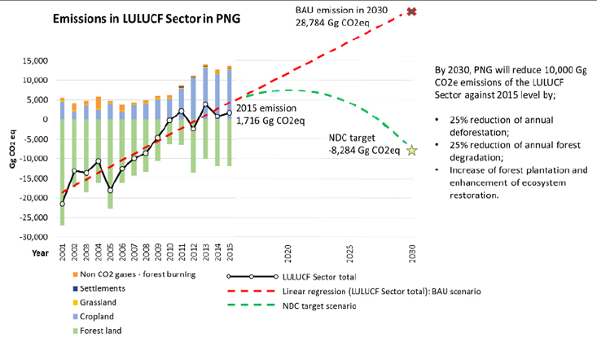
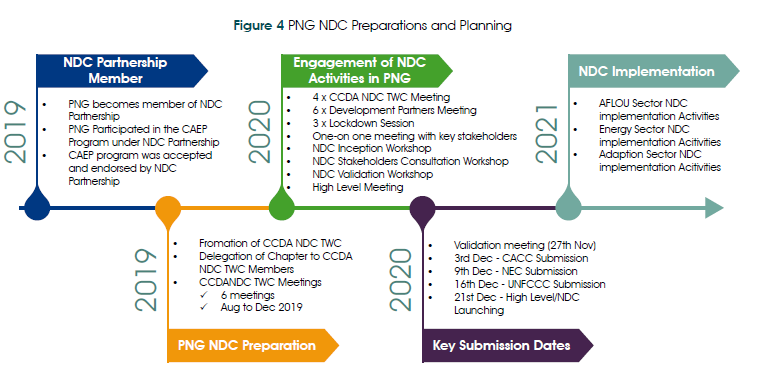
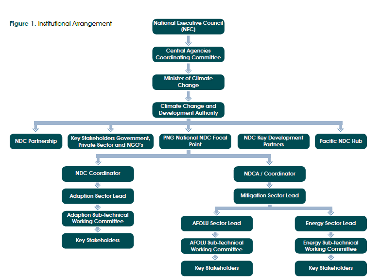

PNG reported total net Green House Gas (GHG) emissions in 2015 of 15,193 Gg CO2 eq compared to -14,179 Gg CO2 eq in 2000, a net increase of close to 30,000 Gg CO2 eq1. These increases were driven by a combination of increases in emissions from the energy sector linked to a growing economy and development of PNG’s natural gas reserves as well as increases in emissions and a reduction in accounted for removals2 from the LULUCF sector.
PNG is committed to working to reverse this growth in emissions as part of the global fight against climate change and recognition of the country’s vulnerability to its impacts - PNG is ranked as one of the 10 vulnerable countries in the world to the risks of climate change.3
This NDC provides information on PNG’s key commitments to both mitigate and address the impacts of climate change. It builds on and enhances ambition from PNG’s first NDC (submitted in 2015) through inclusion of additional sector targets for LULUCF and adaptation as well as increasing information on the nature of these targets in line with the Enhanced Transparency Framework (ETF). The NDC also recognizes the important role that improved collection and management of emissions related data across the economy will have in PNG’s capacity to further enhance ambition and respond to climate change.
A summary of PNG’s commitments is presented below. All commitments are conditional in recognition of PNG’s position as a developing national with limited resources and capacity and cover an implementation period of 2020 to 2030.
PNG’s emissions and recent increases are primarily driven by the AFOLU and Energy sectors, which accounted for 13,522 Gg CO2 eq, or 89% of reported net emissions in 2015. Total emissions from the energy sector in 2015 were 11,806 Gg CO2 eq, an increase of 5,532 Gg CO2 eq (88.2%) from 20004. Energy industries and Manufacturing industries and construction accounted for 5,596 (47%) Gg CO2 eq of these emissions in 20155 and include emissions from on and off grid electricity generation and operation of the LNG plants.
Within the AFOLU sector, Land Use, Land Use Change and Forestry sector (LULUCF) is the biggest contributor to GHG emissions in PNG accounting for net emissions of 1,717 Gg CO2 eq in 2015 compared to -21, 636 Gg CO2 eq in 2000 which is a total decrease of removals amounting to 23,370 Gg CO2 eq.6
As such this enhanced NDC focuses on targets and actions within these two sectors specifically the LULUCF sector7 and Energy Industries subsectors, while also noting opportunities for action within the transport subsector and a commitment to enhance ambition in the way that PNG collects and manages data within them and across all emitting sectors to allow for further refinement and enhancement of ambition within future updates.
PNG has enhanced its NDC commitments by presenting targets for both the Energy Industries and LULUCF sectors, which made up 38% of PNG’s reported net emissions in 20158 consideration of possible actions within the transport sector are also presented. Across both sectors targets are based against a 2015 baseline with the target period covering 2021- 2030. All targets presented are conditional.
Within the Energy Industries PNG is committing to a headline target of carbon neutrality within the energy industries sub-sector by 2030.
This will be achieved by:
In addition PNG will continue to review appropriate options and approaches to reducing emissions from the transport subsector.
By 2030, PNG is committing to a reduction in annual emission from deforestation and forest degradation, due to agriculture expansion and commercial logging of 10,000 Gg CO2 eq compared to 2015 level. This target is significant in itself but should also be seen in the context of PNG’s projected business as usual scenario for the forest sector which would result in significant increases in levels of emissions (see Figure 1) As such PNG is working to deliver a significant change is the emission trend within the sector.

Figure 1 PNG’s annual GHG emissions and removals between 2001 and 2015, the future emissions prediction under the business as usual scenario and an illustrative pathway to the NDC target for the LULUCF sub-sector.
This target will be achieved by a 25% reduction in both the area of annual deforestation and annual degradation against 2015 levels (equating to a reduction in annual deforestation of 8,300 ha or annual degradation of 43,300ha) as well as an increase in the area of forest planted.
In additional PNG will continue to take action to strengthen the quality and nature of reporting on the LULUCF sector to allow for better accounting of the sustainable management of forests as well as reviewing how best to account for removals from PNG’s extensive forest resource. This will be supported by improvements in information and reporting on agriculture to allow for its inclusion within future NDCs.
The enhanced NDC will focus on four (4) development sectors central to PNG’s ability to adapt to climate change namely agriculture, health, infrastructure, and transport. This sectoral focus is in line with the PNG National Adaptation Plan, which is currently under development. The adaptation targets are measured against beneficiaries for the agriculture and health sectors, and the value and number of assets for the transport and infrastructure sector and are summarized below:
The NDC is consistent with the methodologies used in the preparation and development of the BUR1 using the 2006 IPCC Guidelines for National Greenhouse Gas Inventories.
PNG adopted the baseline method in the determination of contributions and in compiling its NDC. Whilst there are existing laws, policies, measures, and initiatives that will guide actions going forward, effective implementation will require structural adjustments to the domestic regulatory framework, institutional measures, financing, and additional action (including projects). Hence, the NDC will be assessed against the identified baselines, as opposed to considering the contributions and targets as “business as usual”.
The NDC has been developed through an extensive process of consultation including sector-sub technical working groups, three four day long ‘lockdowns’ that bought together key technical officers from across key sectors and four national level consultation meetings that provided a forum for multi-stakeholder inputs into the NDC. Targets presented are in line with key national policies, strategies and plans and it has been endorsed by the National Executive Council of PNG.
Within this process there has been a strong commitment to ensuring a gender responsive and human rights-based approach, which will be carried over into all related planning, programming and implementation. This includes participation of women, youth and vulnerable groups in consultations, planning and decision making in the sectors, as well as to ensure women and youth have opportunities to develop sustainable low-carbon livelihoods.
PNG’s emissions account to a minimal percentage of global emissions. The country is also a lower middle-income country that faces significant development challenges. Despite this the GoPNG have made significant commitments to address the impacts of climate change, with the proposed targets considered very ambitious (addressing sectors responsible for over 38% of PNG’s net emissions and a far higher percentage should gross emissions from the LULUCF sector be considered) when assessed against PNG’s levels of development, its status as a Small Island Developing State (SIDS) and its emissions profile – including projected increases in emissions. It should also be noted that these targets mark a stepwise approach to the development of PNG’s emissions commitments with ongoing improvements in GHG monitoring and reporting being undertaken to allow PNG to more effectively develop and set targets for sectors in which data is currently too limited for effective target setting.
The inclusion of adaptation within PNG’s targets presents a clear statement of recognition that PNG, while only contributing a relatively insignificant level of emissions, will face some of the most significant impacts of climate change. As such support to addressing these impacts is paramount as part of the global response to climate change.
PNG is committed to delivering the targets presented in this NDC and further enhancing ambition in future NDCs. Presented targets are in line with key national and sector policies and strategies, as well as the emerging National Adaptation Plan and as such are fully integrated into PNG’s response to climate change. PNG will also establish a National Climate Change Coordination Committee (NCCCC) that will bring together key sector agencies and central government bodies to lead PNG’s response to climate change. This committee will be supported by the Climate Change Development Authority (CCDA), which will continue its mandate to collect information on emissions and the impacts of climate change as well as support sectors and subnational governments in the development of mitigation and adaptation plans and actions and their mainstreaming into core workflows. An NDC Implementation Plan has also been developed to provide a more detailed outline of how targets will be achieved and it will be against this work plan that annual progress will be monitored. The NDC Implementation Plan also lays out key projects and programmes that will require support to ensure that targets are met.
Papua New Guinea First Biennial Update Report. (2018)↩︎
PNG currently only accounts for removals from regenerating forests and planted forest. Clearance of degraded forest areas have thus had a significant impact on levels of removals. PNG does not account for removals from primary forest remaining forest.↩︎
United Nations University. 2016. World Risk Report 2016. http://weltrisikobericht. de/wp-content/uploads/2016/08/WorldRiskReport2016.pdf↩︎
Papua New Guinea First Biennial Update Report. (2018)↩︎
Papua New Guinea First Biennial Update Report. (2018)↩︎
Papua New Guinea First Biennial Update Report. (2019)↩︎
Emissions from agriculture are not seen to make up a significant level of emissions with data on the agriculture sector also currently limited preventing accurate reporting of its impacts.↩︎
It should be noted that the LULUCF sector in PNG makes up significantly higher levels of emissions (13,574.04 Gg CO2 eq in 2015) but these are offset by removals within PNG’s current approach to reporting leaving a relatively small net emission of 1,716.46 Gg CO2 eq.↩︎
It is noted that this is an amendment of PNG’s presented commitments in their First NDC of 100% renewables – this revision is based on improved data on existing and planned energy projects and recognition of the growth and importance of PNG’s LNG sector.↩︎
Papua New Guinea signed the United Nations Framework Convention on Climate Change (UNFCCC) in June 1992 in Rio de Janeiro, Brazil, and became a Party after its ratification in March 1993. On 21st September 2016, PNG ratified the Paris Agreement in New York during the 72nd Session of the United Nations General Assembly. PNG is also a member of the Small Island Developing States (SIDS) and aligns itself with the Alliance of the Small Island Developing States (AOSIS) in the context of the UNFCCC. PNG is the current Chair of the Coalition for Rainforest Nations (CfRN), engaging in negotiations under the UNFCCC for its 52 member countries, especially on Article 6 of the Paris Agreement.
PNG established the Climate Change and Development Authority (CCDA) under its national Climate Change Management Act 2015 (CCMA), with the primary role of facilitating and developing appropriate policies, and regulatory framework to address climate change in the country. The Act is currently under review to ensure that it can effectively respond to the needs of and PNG’s obligations under the Paris Agreement.
The Government of PNG (GoPNG) has shown its commitment to fulfilling its obligations under the UNFCCC. This includes mainstreaming climate change in its development priorities, as captured in the national long-term political vision, plans, and strategies of; PNG Vision 2050, the National Development Strategic Plan 2010-2030, and the Medium Term Development Plan III. These strategies are founded on the concepts of helping to strengthen and diversify the foundations of PNG’s economic growth while taking action to both increase the country’s resilience to climate change and take steps to further mitigate emissions. The most recent steps in developing these policy approaches have been the development of PNG’s SDG 13 Climate Action Roadmap as well as the development of the National REDD+ Strategy (NRS).
The development of PNG’s Nationally Determined Contributions (NDC) aligns with the national strategies noted above and builds on the first NDC submitted in 2016. This NDC further aligns with sectorial policies, plans, and strategies that stakeholders will implement in response, existing challenges and circumstances.
PNG’s NDC sets out a comprehensive package of policies and measures, sectorial targets, and sector-specific actions that are tailored towards meeting defined contributions to addressing climate change through both immediate action and developing the enabling environment and technical capacity for an ongoing process of increased ambition. The document is, in compliance with the Enhanced Transparency Framework (ETF) requirements as stipulated under the Paris Agreement. The contributions outlined in this NDC are all conditional.
The NDC outlines key pathways towards sustainable economic development in line with the United Nations Sustainable Development Goals – in particular, Goal 13 on Climate Action. The central element of this is; maintaining PNG’s high forest cover (currently reported at 78 percent1) and reducing emissions from both the AFOLU and Energy Sectors covering two (2) of the four (4) emitting sectors from PNG’s first Biennial Update Report submitted in 2019.
Adaptation is a high priority due to the climate-related hazards that already pose significant risks to PNG today. PNG’s commitment to adaptation for 2020-2030 will focus on four priority development sectors of agriculture, health, transport, and infrastructure. The PNG’s National Adaptation Plan which is due for completion in 2021 will align with this enhanced NDC.
The commitment here seeks to ensure a gender-responsive and human rights-based approach in all related planning, programming, and implementation. This includes the participation of men, women, youths, and vulnerable groups in consultations, planning, decision making and implementation in the identified sectors, as well as ensuring men, women and youths have opportunities to develop sustainable low-carbon livelihoods.
| Adaptation | Adjustment in natural or human systems in response to actual or expected climatic stimuli or their effects, which moderates harm or exploits beneficial opportunities. |
| Afforestation | Planting of new forests on lands that historically have not contained forests. |
| Agriculture, Forestry and Other Land Use (AFOLU) | One of the four main anthropogenic greenhouse gas emitting sectors according to the 2006 IPCC Guidelines concerned with land. This integration recognizes that the processes underlying greenhouse gas emissions and removals, as well as the different forms of terrestrial carbon stocks, can occur across all types of land. It recognizes that land-use changes can involve all types of land |
| Base Year | Starting year of the inventory. |
| Biomass fuels or biofuels | A fuel produced from dry organic matter or combustible oils produced by plants. These fuels are considered renewable as long as the vegetation producing them is maintained or replanted, such as firewood, alcohol fermented from sugar, and combustible oils extracted from soy beans. Their use in place of fossil fuels cuts greenhouse gas emissions because the plants that are the fuel sources capture carbon dioxide from the atmosphere. |
| Capacity building | In the context of climate change, the process of developing the technical skills and institutional capability in developing countries and economies in transition to enable them to address effectively the causes and results of climate change. |
| Carbon dioxide equivalent (CO2 eq) | A measure to compare different greenhouse gases based on their contribution to radiative forcing. The UNFCCC currently (2005) uses global warming potentials (GWPs) as factors to calculate carbon dioxide equivalent. |
| Census | Data collected by interrogation or count of an entire population. |
| Coalition for Rainforest Nations | A voluntary grouping of largely developing nations with rainforests which addresses issues surrounding environmental sustainability specific to tropical rainforests. Participation does not necessarily imply that countries adhere to any specific domestic policies or negotiating positions within the international context. At September 2011, the group included Argentina, Bangladesh, Belize, Cameroon, Central African Republic, Chile, Congo, Costa Rica, Cote d’Ivoire, DR Congo, Dominica, Dominican Republic, Ecuador, Equatorial Guinea, El Salvador, Fiji, Gabon, Ghana, Guatemala, Guyana, Honduras, Indonesia, Jamaica, Kenya, Lesotho, Liberia, Madagascar, Malaysia, Nicaragua, Nigeria, Pakistan, Panama, Papua New Guinea, Paraguay, Samoa, Sierra Leone, Solomon Islands, Suriname, Thailand, Uruguay, Uganda, Vanuatu and Vietnam. Countries participate on a voluntarily basis primarily through unified negotiating positions, workshops and collaborative programs. |
| Country – specific data | Data for either activities or emission that are based on research carried out on sites either in that country or otherwise representative of that country. |
| Deforestation | Is the conversion of forest land to any non-forest land. Primary deforestation is the conversion of primary forest. Secondary deforestation is the conversion of degraded forest. |
| Forest degradation | Is the conversion of primary forest to disturbed forest |
| Energy Sector | One of the four main anthropogenic greenhouse gas emitting sectors according to the 2006 IPCC Guidelines concerned with the combustion of fossil fuels, fugitive emission and carbon. |
| Green Climate Fund (GCF) | At COP 16 in Cancun in 2010, Governments established a Green Climate Fund as an operating entity of the financial mechanism of the Convention under Article 11. The GCF will support projects, programs, policies and other activities in developing country Parties. The Fund will be governed by the GCF Board |
| Greenhouse gases (GHGs) | The atmospheric gases responsible for causing global warming and climate change. The major GHGs are carbon dioxide (CO2), methane (CH4) and nitrous oxide (N2O). Less prevalent but very powerful greenhouse gases are hydrofluorocarbons (HFCs), perfluorocarbons (IMOs) and sulphur hexafluoride (SF6). |
| Intergovernmental Panel on Climate Change (IPCC) | Established in 1988 by the World Meteorological Organization and the UN Environment Program, the IPCC surveys world-wide scientific and technical literature and publishes assessment reports that are widely recognized as the most credible existing sources of information on climate change. The IPCC also works on methodologies and responds to specific requests from the Convention’s subsidiary bodies. The IPCC is independent of the Convention. |
| Kyoto Protocol | An international agreement standing on its own, and requiring separate ratification by governments, but linked to the UNFCCC. The Kyoto Protocol, among other things, sets binding targets for the reduction of greenhouse-gas emissions by industrialized countries. |
| Land cover | The type of vegetation, rock, water, etc. covering the earth’s surface. |
| Land use | The type of activity being carried out on a unit of land. |
| Land use, land-use change, and forestry (LULUCF) | A greenhouse gas inventory sector that covers emissions and removals of greenhouse gases resulting from direct human-induced land use, land-use change and forestry activities. |
| Loss and damage | At COP 16 in Cancun in 2010, Governments established a work program in order to consider approaches to address loss and damage associated with climate change impacts in developing countries that are particularly vulnerable to the adverse effects of climate change as part of the Cancun Adaptation Framework. |
| Mitigation | In the context of climate change, a human intervention to reduce the sources or enhance the sinks of greenhouse gases. Examples include using fossil fuels more efficiently for industrial processes or electricity generation, switching to solar energy or wind power, improving the insulation of buildings, and expanding forests and other “sinks” to remove greater amounts of carbon dioxide from the atmosphere. |
| Measurement, reporting and verification (MRV) | Measurable, reportable and verifiable. A process/concept that potentially supports greater transparency in the climate change regime. |
| National Adaptation Programmes) | Measurable, reportable and verifiable. A process/concept that potentially supports greater transparency in the climate change regime. |
| National Communication | A document submitted in accordance with the Convention (and the Protocol) by which a Party informs other Parties of activities undertaken to address climate change. Most developed countries have now submitted their fifth national communications; most developing countries have completed their first national communication and are in the process of preparing their second. |
| National Determined Contribution (NDC) | According to Article 4 paragraph 2 of the Paris Agreement, each Party shall prepare, communicate and maintain successive nationally determined contributions (NDCs) that it intends to achieve. Parties shall pursue domestic mitigation measures, with the aim of achieving the objectives of such contributions. |
| Party | A state (or regional economic integration organization such as the European Union) that agrees to be bound by a treaty and for which the treaty has entered into force. |
| Population | The population is the totality of items under consideration. In the case of a random variable, the probability distribution is considered to define the population of that variable. |
| Removals | Removal of greenhouse gases and/or their precursors from the atmosphere by sink. |
| Sink | Any process, activity or mechanism which removes a greenhouse gas, an aerosol, or a precursor of a greenhouse gas from the atmosphere. (UNFCCC Article 1.8) Notation in the final stages of reporting is negative (-) sign. |
| Source | Any process or activity which releases a greenhouse gas, an aerosol, or a precursor of a greenhouse gas into the atmosphere. (UNFCCC Article 1.9) Notation in the final stages of reporting is the positive (+) sign. |
| Time series | A time series is a series of values which are affected by random processes and which are observed at successive (usually equidistant) points in time. |
| Trend | The trend of a quantity measures its change over a time period, with a positive trend value indicating growth in the quantity, and a negative value indicating a decrease. It is defined as the ratio of the change in the quantity over the time period, divided by the initial value of the quantity, and is usually expressed either as a percentage or a fraction. |
| IPCC Revised1996 | Guideline for estimating emissions and (removals) of particular gases from the five (5) anthropogenic greenhouse gas sectors. Energy Sector, Industrial Processes Sector, Agricultures, Land Use, Land-Use Change and Forestry Sector and Waste Sector |
| IPCC 2006 | Guideline for estimating emissions and (removals) of particular gases from the four (4) anthropogenic greenhouse gas sectors. Energy Sector; Industrial Processes and Product Use Sector; Agricultures, Forestry and Other Land-Use; and Waste Sector. |
| Verification | Verification refers to the collection of activities and procedures that can be followed during the planning and development, or after completion of an inventory that can help to establish its reliability for the intended applications of that inventory |
| Vulnerability | The degree to which a system is susceptible to, or unable to cope with, adverse effects of climate change, including climate variability and extremes. Vulnerability is a function of the character, magnitude, and rate of climate variation to which a system is exposed, its sensitivity, and its adaptive capacity. |
| ABM | Australia Bureau of Meteorology |
| AD | Activity data |
| AFOLU | Agriculture, Forestry and Other Land Use |
| AOSIS | Alliance of the Small Island States |
| BUR | Biennial update report |
| CCDA | Climate Change and Development Authority |
| CCDA NDC TWC | Climate Change and Development Authority Nationally Determined Contribution Technical Working Committee |
| CCMA | Climate Change Management Act |
| CfRN | Coalition for Rainforest Nations |
| CH4 | Methane |
| CHARM | Comprehensive Hazards and Risk Management |
| CO2 | Carbon Dioxide |
| COP | Conference of Parties |
| DNPM | Department of National Planning and Monitoring |
| EF | Emission factor |
| ETF | Enhanced Transparency Framework |
| FAO | The Food and Agriculture Organization of the United Nations |
| FRDP | Pacific’s Framework for Resilient Development Plan |
| FRL | Forest Reference Level |
| GCF | Green Climate Fund |
| GEF | Global Environment Facility |
| Gg | Giga gram |
| GHG | Greenhouse gas |
| GoPNG | Government of Papua New Guinea |
| ICCAI | International Climate Change Adaptation Initiative |
| INC | Initial National Communication |
| INDC | Intended Nationally Determined Contributions. |
| IOC | International Ocean Commission |
| IPCC | IPCC Intergovernmental Panel on Climate Change |
| IPPU | Industrial processes and product use |
| KRA | Key Result Area |
| LNG | Liquefied Natural Gas |
| LULUCF | Land use, land-use change and forestry |
| MTDP | Medium-Term Development Plan |
| MRV | Measurement, reporting and verification |
| N2O | Nitrous Oxide |
| NAP | National Adaptation Plan |
| NC | National Communication |
| NCCDMP | National Climate Compatible Development Management Policy |
| NDA | National Designated Authority |
| NDC | Nationally determined contribution |
| NEC | National Executive Council |
| NRS | National REDD+ Strategy 2017–2027 |
| NSO | National Statistical Office |
| PNG | Papua New Guinea |
| REDD+ | Reducing Emissions from Deforestation and, Forest Degradation and the role of conservation, sustainable forest management of forests, and enhancement of forest carbon stocks |
| RFIP | REDD+ Finance and Investment Plan |
| SIDS | Small Island Developing States |
| SNC | Second National Communication |
| STaRs | Strategy for the Responsible Development for PNG |
| STWC | Sub-technical Working Committee |
| UNDP | United Nations Development Programme |
| UNFCCC | United Nations Framework Convention on Climate Change |
The Paris Agreement under the United Nations Framework Convention on Climate Change (UNFCCC) is the cornerstones that bind international obligations on climate change globally. The Paris Agreement specifically challenges Parties under Article 3 to take robust climate action, through what has become known as the Nationally Determined Contributions (NDC). Papua New Guinea (PNG) like all other Parties is required to communicate its ambitious targets and report on progression overtime on how PNG through national action is contributing towards achieving the long term temperature and adaptation goals set under Article 2 of the Paris Agreement.
The NDC is an articulation of PNG’s mitigation and adaptation contributions. It sets out targets and identifies measures and actions to be pursued towards achieving these targets. It contains five (5) chapters which outline the following:
PNG is an island country in the South Pacific Region, located between the Equator and the Tropic of Capricorn. It shares the international land border with Indonesia to the west, and maritime borders with Australia to the south, the Solomon Islands to the east, and the Federated States of Micronesia to the north. It has a total land area of (46.13 million hectares), 97 percent2 of which is customarily owned by local indigenous people, while 3 percent is alienated land owned by the State.
Owing to its geographical proximity to the northward moving Australian continental plate and the northwest moving Pacific plate, PNG is located in one of the most tectonically active areas in the world, also known as the ring of fire. The country is bestowed with remarkable diversity and extraordinary landscapes, terrestrial ecosystems, rich flora and fauna with accommodating climatic conditions.
PNG’s climate is classified as an ‘Af climate’ according to Koppen –Geiger Classification with hot, humid tropical climate experienced all year round3. The country experiences two distinctive seasons: wet and dry - whereby the wet season occurs from December to March, and the dry season from June to September. PNG’s average monthly rainfall ranges between 250mm – 350mm, with average temperatures between 26 – 28 degrees Celsius. Humidity is relatively high in PNG, ranging between 70 - 90 percent4.
PNG is ranked as the tenth most vulnerable country in the world to the risk of climate change5. PNG’s highlands region is susceptible to extreme weather such as heavy rainfall, which may increase the occurrence of landslides and inland flooding. The coastal regions, the islands and the low-lying atoll areas are mostly vulnerable to extreme weather events, storm surge, sea-level rise, and coastal inundation.
With more than 75 - 80 percent of the population living in rural areas6, the risk of exposure to natural hazards is very high. PNG’s rural populations are mostly subsistence farmers that rely on subsistence farming for their livelihoods, with limited capacity to protect themselves from climate-induced natural disasters. The rugged mountainous terrain as well as limited access to basic infrastructures such as roads and bridges has hindered rural communities to access health care, education and broader development opportunities. Women are particularly vulnerable due to the lack of access to land, income, credit and other resources. This lack of access impedes their ability to cope with climate stresses and disasters.
About 60 percent of PNG’s population is under the age of 25 years7. Much of this group experience poverty as a result of lack of access to education and employment opportunities. The literacy rate for young men is 67 percent, and for young women, 79 percent8. Approximately 28.4 percent of young people (between the ages of 15-24) are not employed or otherwise participating in educational or vocational training opportunities9.
PNG’s climate is projected to change as shown in Table 1 below. According to the Commonwealth Scientific and Industrial Research Organization (CSIRO), there is a high confidence level of different climate variables increasing over the course of the 21st century.
| Climate variable | Projection | Confidence level |
| Surface air temperature | Projected to increase | Very high confidence |
| Sea surface temperature | Projected to increase | Very high confidence |
| Annual mean rainfall | Projected to increase | High confidence |
| Seasonal mean rainfall | Projected to increase | High confidence |
| Intensity and frequency of days of extreme heat | Projected to increase | Very high confidence |
| Intensity and frequency of days of extreme rainfall | Projected to increase | High confidence |
| Incidence of drought | Projected to decrease | Moderate confidence |
| Frequency of tropical cyclones | Projected to decrease | Moderate confidence |
| Ocean acidification | Projected to continue | Very high confidence |
| Mean sea-level rise | Projected to increase | Very high confidence |
These projections are expected to raise exposure levels and increased vulnerability to shifting climatic conditions and will impact the growing population and economic development.
According to the PNG’s national population census 2011, the country’s population has grown from 3.8 million in 1990 to 7.3 million. The 2000 and 2011 censuses10 acknowledged that around 12 percent of PNG’s population lives in urban areas while the rest of the population lives in rural communities. These rural communities maintain traditional village structures and depend on subsistence farming, supplemented by cash cropping. Thirty nine percent of the overall population live in the Highlands region, 26 percent in the Momase region, with the Southern and New Guinea Islands regions totalling 20 percent and 15 percent of the population respectively.
Sustainable economic development is a priority agenda for the Government of Papua New Guinea (GoPNG), and is reflected as a long-term goal in the PNG Vision 2050 (Vision 2050), for PNG to be a “Smart, Wise, Fair, Healthy and Happy Society”. To implement the Vision 2050, the PNG Development Strategic Plan 2010-2030 was developed and endorsed by the National Executive Council (NEC), which sets out key targets and more detailed strategies. This serves as the building block to achieving the requirements of the Vision 2050. To ensure that the priority pillars of the Vision 2050 are met, a 5-year plan called the Medium-Term Development Plan (MTDP) was developed with specific sector targets and indicators.
PNG is a developing country and has a dual economy, consisting of both the formal and informal economy. The formal economy is made up of the large-scale extractive mining and petroleum sector, and the primary industries sector including; forestry, fishing, and commercial agriculture. It employs 15 percent of the total workforce. The informal economy on the other hand supports 85 percent of the population through subsistence agriculture11 and is dominated by women.
Despite the abundance of natural resources and economic growth recorded since 2013, PNG’s economy faces numerous challenges. The rugged terrain and the high costs of infrastructure hamper the exploitation and development of natural resources, and consequently, the formal and informal economies which support it. The GoPNG, with the support of development partners and investors, aims to pursue economic activities to realize sustainable economic development.
Papua New Guinea is a signatory to the UNFCCC since 13th June 1992 and has been engaged in international climate change negotiations. PNG ratified the UNFCCC on 16th March 1993. In 2015, the Paris Agreement was adopted, and PNG ratified the agreement on 21st September 2016. In 2016, PNG enacted the United Nations Paris Agreement Act 2016, which gives domestic effect to the Paris Agreement and provides a legal basis under which the NDC is administered in PNG, together with the Climate Change Management Act, 2015.
The Climate Change and Development Authority CCDA is the National Designated Authority that coordinates all climate change-related matters in PNG. CCDA is also the focal point to the UNFCCC. As the coordinating agency, CCDA works in collaboration with stakeholders, with the objective of providing a coordination mechanism at the national and provincial level for research, analysis, and development of the policy and the legislative framework to move towards a low carbon economy and achieving climate-resilient development in the country.
To comply with the reporting obligations under the UNFCCC, PNG prepared and submitted its First and Second National Communication (NC) in 2002 and 2014, respectively. The report captures Papua New Guinea’s Green House Gas emissions and removals including the country’s actions to mitigate and adapt to the effects of climate change. The Revised 1996 IPCC Guidelines were used for the First NC and Second NC and the categories were estimated using Tier 1 methods. The 2006 Good Practice Guidance was also used in the Second NC.
PNG then submitted its First Biennial Update Report (BUR1) to the UNFCCC in 2019. The BUR1 contains updated information of PNG’s GHG emissions and removals as well as mitigation actions and support received. The 2006 IPCC Guidelines was used in the BUR1 GHG Inventory and most categories were estimated using Tier 1 method while certain categories in the Agriculture, Forestry and Other Land Use (AFOLU) and the Waste sector was estimated using the Tier 2 method. The time series reported in the GHG Inventory for the BUR1 was 2000 to 2015, which is an updated version of the Second NC. The BUR1 contains the results achieved by PNG from reducing emissions from deforestation and forest degradation and enhancement of forest carbon stock (REDD+) initiatives in the AFOLU sector as a Technical Annex. The Third National Communication (Third NC) and BUR2 are planned to be submitted by 2021 which will provide an update of the Second NC and BUR1. Further improvement will be needed to comply with the Enhanced Transparency Framework (ETF) as per Decision 18/CMA.
PNG submitted its NDC on 24th March 2016 in which its contributions and pledges were declared conditional and subject to relevant technical and funding support made available by the developed countries through relevant international funding sources. It proposed that PNG’s main contributions will come from the existing REDD+ initiatives under the Agriculture Forestry and Other Land Use (AFOLU) sector, and a 100 percent renewable energy target set for 2030 as well as promotion of energy efficiency uses in all appliances from the energy sector. The other important component of the contributions would be from climate-resilient development in the country and enhancing adaptation in the livelihood of the rural population which amounts to 75 – 80 percent12 of the 8.25 million13 people in PNG.
PNG’s NDC in 2016 was prepared in line with the national strategies and plans. The commitments were adduced from the National Climate Compatible Development Management Policy (NCCDMP), under which PNG aspires to reduce its emission to 50 percent by 2030 and to be carbon neutral by 2050.
Specific to the forest sector, PNG developed its National REDD+ Strategy which was approved by NEC in May 2017. The National REDD+ Strategy outlines the key action areas across the sectors. These are addressed further within the section on LULUCF
PNG’s Forest Reference Level (FRL) was submitted to the UNFCCC on 15th January 2017 which shows the historical annual emissions from the LULUCF subsector of 31,000 Gg CO2 eq per annum, and it predicts an ongoing increase in the emissions levels in the sector. However, should there be any reduction below this level; PNG will become eligible for result based payments (RBP). All four design elements of the Warsaw Framework (National REDD+ Strategy14, National Forest Monitoring System, SIS and FREL/FRL were developed with technical assistance of the United Nations Development Programme (UNDP) and the Food and Agriculture Organization of the United Nations (FAO). This allowed PNG to prepare a submission for RBP to the Green Climate Fund (GCF) and other donor agencies.
According to the BUR1, the total net Greenhouse Gas Emissions in 2015 amounted to 15,193 Gg CO2 eq compared to the emissions in 2000 which was -14,179 Gg CO2 eq. Therefore, PNG went from a net sink in 2000 to a net source in 2015. Below are emissions from each sector:

The current Enhanced NDC utilizes 2015 as the base year for all emission targets with information being based on PNG’s current Greenhouse Gas Inventory Report for Papua New Guinea of that year.15 The targeted GHG for this NDC is carbon dioxide (CO2).
No reference point is provided for the Adaptation Targets due to the diverse adaptation interventions at different levels of development.
The NDC Implementation Period is from 2020 to 2030. This is based on the accompanied decisions to the Paris Agreement adopted in 201516.
The Climate Change and Development Authority is the National Designated Authority of Papua New Guinea that is responsible to implement the Paris Agreement and commitments under the UNFCCC, in close collaboration with line agencies. CCDA provided a coordination mechanism at the national level for the PNG Enhanced NDC through existing institutional frameworks and newly created to best support the successful revision of the NDC.
The coordination by CCDA with Development Partners and Stakeholders is well outlined in Figure 3.

In planning for the revision of the enhanced NDC, CCDA has ensured the following necessary steps were taken to ensure better coordination through National Consultation and NDC Coordination through various steps outlined in Figure 4;

The NDC is consistent with the methodologies used in the preparation and development of the BUR1 using the 2006 IPCC Guidelines for National Greenhouse Gas Inventories.
PNG adopted the baseline method in the determination of contributions and in compiling its NDC. Whilst there are existing laws, policies, measures, and initiatives that will guide actions going forward, effective implementation will require structural adjustments to the domestic regulatory framework, institutional measures, financing, and additional action (including projects). Hence, the NDC will be assessed against the identified baselines, as opposed to considering the contributions and targets as “business as usual”.
PNG’s emissions account for a minimal percentage of global emissions. Despite this, PNG has made significant commitments to address the impacts of climate change, with the proposed targets considered to be very ambitious as assessed against PNG’s levels of development, its status as a Small Island Developing State (SIDS) and its emissions profile.
The NDC is in line with PNG’s Vision 2050 as well as the Climate Compatible Development Management Policy accords. The policy outlines the government’s commitment, to be 50 percent carbon neutral by 2030, and be entirely carbon neutral by 2050.
The NDC commits to ensuring gender-responsive and human rights-based approach in all related planning, programming, and implementation. This includes the participation of women, youth and vulnerable groups in consultations, planning and decision making in the sectors,as well as to ensure women and youth have opportunities to develop sustainable low-carbon livelihoods.
Papua New Guinea reported a net emission in 2015 of 15,193 Gg CO2 eq which is a significant increase from the -14,179 Gg CO2 eq reported for 200017. PNG, therefore, went from a net sink in 2000 to a net source in 2015. The increasing trend was due to the reduction of removals from the AFOLU sector which decreased from - 20,972 Gg CO2 eq in 2000 to 2,512 Gg CO2 eq in 2015, a decrease of 23,484 Gg CO2 eq18. The Energy sector also had an impact on this increasing trend where emissions increased from 6,274 Gg CO2 eq in 2000 to 11,806 Gg CO2 eq in 2015, an increase of 5,532 Gg CO2 eq19.
Within the AFOLU sector, the LULUCF subsector was one of the biggest contributors to GHG emission in PNG accounting for net emission of -21,654 Gg CO2 eq in 2000 and 1,716 Gg CO2 eq in 2015.20 Within the Energy sector, the Energy industries sub-sector was the biggest contributor which accounted to 1,023 Gg CO2 eq in 2000 and 4,128 Gg CO2 eq in 201521.
As such this Enhanced NDC Focuses on targets and actions within these two sectors specifically the LULUCF sub-sector and Energy Industries sub-sectors, while also noting opportunities for action within the transport sub-sector and a commitment to enhance ambition in the way that PNG collects and manages data within them and across all emitting sectors to allow for further refinement and enhancement of ambition within future updates.
Key targets within these areas include:
PNG is committing to a headline target of carbon neutrality within the energy industries sub-sector. This will be achieved by:
Also, PNG will continue to review appropriate options and approaches to reduce emissions from the transport sub-sector.
By 2030, the annual emission from deforestation and forest degradation due to agriculture expansion and commercial logging will be reduced by 10,000 Gg CO2 eq comparing to 2015 level. This will result in the LULUCF sub-sector moving from a net GHG source (1, 176 Gg CO2 eq) in 2015 to net GHG sink (-8,284 Gg CO2 eq) by 2030 to mitigate emissions from other sector
This will be achieved by a 25 percent reduction in both the area of annual deforestation and annual degradation against 2015 levels (equating to a reduction of 8,300 ha of annual deforestation and 43,300ha of degradation) as well as an increase in the areas of forest planted.
The enhanced NDC will focus on four (4) development sectors impacted by the nine (9) priority areas. The development sectors include agriculture, health, infrastructure, and transport which are in line with the development of the PNG National Adaptation Plan. The adaptation targets are measured against beneficiaries for the agriculture and health sectors, and the value and number of assets for the transport and infrastructure sector and are summarized below:
The energy sector is the largest net emitting sector in Papua New Guinea, emitting approximately 87.7 percent of the total emissions (excluding LULUCF) in 2015. The total emission from the energy sector in 2015 was 11,806 Gg CO2 eq, which was an increase of 5,532 Gg CO2 eq (88.2 percent) from 200022. The GHG makeup of the emissions sees CO2 as 68 percent of the total sector emissions, CH4 was 31 percent and N2O was 0.4 percent23. This increase in emissions was a result of an increase in economic activities in the country. To achieve the mitigation contributions in the energy sector, efforts will be directed towards the energy industries and transport sub-sectors that will build on existing policy directives of the implementing agencies.
Energy industries, manufacturing industries and construction account for 5,596 (47 percent) Gg CO2 eq in 201524 and include emissions from on and offgrid electricity generation and operation of the LNG plant. The on-grid generation that is managed by PNG Power Limited (a state-owned entity) and offgrid generation is from the minerals and agricultural industries that produce their own electricity.
The lack of access to reliable and clean energy is restricting economic development, affecting health, and constraining access to education, health and other services in rural areas. Development of renewable energy small to medium-sized enterprises (SME), such as small-scale solar power, can provide green livelihood alternatives to subsistence agriculture. Access to electricity or affordable renewable energies will improve the livelihood of women and young people in particular through decreased workloads, improved cooking, processing of food and Non-Timber Forest Products (NTFPs), increased safety and security from reliable lighting, engaging in home-based businesses and educational activities in the evenings, and reducing air pollution.
The transport sub-sector contributed approximately 2,007 Gg CO2 eq (17 percent) of the total sectoral emissions in 201525. This sub-sector is a growing source of emissions, particularly with the expansion of urban towns and cities, the population contained in these towns and cities mainly rely on fossil fuel-run vehicles for commuting. Availability of safe, affordable, energy-efficient transportation will increase access to employment, markets, education, health, and other services.
Other Sectors contributed 459Gg CO2 eq (4 percent) of the sectoral emissions in 201526, especially from the residential and commercial buildings. PNG does not have much experience with energy efficiency in the residential and commercial building sub-sector; hence the lack of energy efficiency measures to date or energy efficiency projects, which may generate a high return on investments. Thus, energy efficiency in PNG presents the potential for winwin results, reducing greenhouse gas emissions while at the same time providing financial returns via reduced power bills and improving health and economic opportunities for citizens.
Remaining emissions from the energy sector in 2015 came from fugitive emissions of oil and natural gas production which contributed 3,784 Gg CO2 eq (32 percent)27. Irrespective of PNG’s efforts in reducing GHG emissions, PNG stands as a developing country and the economy relies on oil and natural gas production. Hence future GHG emissions are predicted to take place that potentially will come with the development of oil and natural gas production.
The GHG information presented above is reflective of quantitative data uncovered as a result of the BUR1 GHG inventory. Since PNG does not have a National Energy Balance table, the Asia Pacific Economic Cooperation (APEC) energy balance table was used to estimate emissions from the energy sector in the BUR1. While some of the data used to develop the APEC energy balance table were from actual sources in PNG, most of the information was based on estimates. Due to these uncertainties, it was decided not to include quantified GHG targets for the energy sector in this NDC. The appropriate technical and financial support will be necessary to build the capacity of relevant agencies to manage and analyze data to enable the setting of GHG targets in PNG’s forthcoming NDCs.
PNG is committing to a headline target of carbon neutrality within the energy industries sub-sector. This will be achieved by:
As part of PNG’s energy transition, the country is targeting a transition in its energy mix in the energy industries for the share of installed capacity of renewables from 30 percent in 2015 to 78 percent in 2030 for on-grid connection managed by PNG Power Limited. This target is conditional and based on the availability and timing of international support. The National Electricity Roll-Out Plan and PNG Power Limited’s 15-year power development plan were used to establish this target and will also be used to monitor the progress of this target.
This target represents a decrease from PNG’s original target of 100 percent renewable by 2030. This revision is based on:
Increased efficiency of energy use will play a key role in mitigating the growth in PNG’s demand for energy linked to a growing economy and population. Central to this approach will be the adoption and implementation of Minimum Energy Performance Standards and Labelling (MEPSL) Regulations as well as enhancing public awareness of energy use and means of reducing energy use. In-depth work in the areas of building energy efficiencies such as evaluating the performance of installed air conditioning and refrigeration systems and developing recommendations to improve such systems as retrofits or in industrial energyefficiency audits and retrofits will require financial and technical support. The draft MEPSL is intended to be fully implemented by 2030. Limited data on existing energy use and potential trends currently prohibits placing a quantified target on the impact of these actions.
PNG remains committed to an energy transition but also recognizes that a full transition will take time given PNG’s complex geographies and dispersed population as well as a growing economy. As such, a framework for offsetting of emissions from fossil fuels will be introduced to support economic incentives for the transition while also helping to finance domestic nature-based solutions in particular, reduced emissions and enhanced removals from the forest sector.
PNG will establish a framework for enhanced data collection on energy use and associated emissions to support improved policy and regulation to manage emissions.
The above targets are fully in line with existing national policy and strategy documents as well as industry action plans. Key strategies linked to these targets and central to their achievement include:
Priority renewable energy projects for investment set out in PNG’s Country Programme for Green Climate Fund finance
Several major programs are already being implemented that will contribute to achieving the targets, and they include:
The Climate Change (Management) Act 2015 is being reviewed to provide a stronger link between the energy sector and emissions reductions and to create a framework for improving energy data collection.
Papua New Guinea aims to further enhance its ambitions on taking action within the Energy sector. One of the areas is the transport subsector which aims to promote clean fuel technology regulations to set standards for the GHG emissions, and economic incentives for fuel-efficient vehicles. Actions from the transport subsector are contained in the National Transport Strategy, the Medium-Term Transport Plan II 2019-2022, National Energy Policy 2017-2027, and National Climate Compatible Development Management Policy but will need financial and technical support for them to be implemented by 2030. These measures include the following:
The Land Use, Land-Use Change and Forestry (LULUCF) sub-sector is one of the biggest contributors to GHG emissions in PNG. Nevertheless, the sector also has the highest potential for removal. The sector has evolved into a smaller sink over time due to a decrease in forest lands. The net emissions from the LULUCF sector amounted to 1, 717 Gg CO2 eq in 2015 compared to -21, 636 Gg CO2 eq in 2000 which is a total decrease of removals amounting to 23,370 Gg CO2 eq28.
Most of the emissions in the sector occurred as a result of deforestation and forest degradation. Almost all deforestation was due to land-use conversion from forest land to cropland, in particular, subsistence agriculture (68.8 percent) and for oil palms plantation development (24.4 percent). Logging was the major driver of forest degradation, accounting for over 90 percent of the total degraded forest in PNG. Hence, the primary mitigation effort of the sector lies in reducing emission from deforestation and forest degradation due to commercial agriculture, subsistence agriculture and commercial logging.
Sustainable forest management practice is the cornerstone of the current forest policy in the management and utilization of the nation’s forest resources. This is now being strengthened by the approval of several national government policy instruments in 2020, including; the National Reforestation and Afforestation Strategies, National Strategies on Domestic Processing of Forest Produce, Revised PNG Logging Code of Practice 2nd Edition, and the PNG Timber Legality Standard. These policy instruments are crucial to facilitating orderly management and development of the forest resources, with the view of giving significant recognition to mitigate against climate change effects.
The REDD+ Finance and Investment Plan (RFIP) which is integral part of the NDC Implementation Plan identified areas within the AFOLU sector to mitigate GHG Emissions . The RFIP sets out the potential opportunities that scaling up actions in line with PNG’s National REDD Strategy (NRS) could deliver. These include emissions reductions of more than 60 million tonnes of CO2e over the coming decade, while also delivering significant economic, social and environmental co-benefits. This information is intended to help inform decision makers and potential investors of the potential to deliver tangible returns from upfront investments in REDD+ in PNG.
Progress in the sector is influenced by the following:
Landholders and communities are in need of access to basic services and development opportunities. Many communities and landholders are faced with rapid transition into a global cash-based economy, without the appropriate awareness, skills, and support for sustainable management of resources. Hence, they are indirectly increasing the deforestation and degradation of the forest cover.
Achievement of proposed action areas in the enhanced NDC will be critical in helping transform the livelihoods of PNG’s rural communities, safeguard biodiversity and progress PNG towards establishing a sustainable and climate smart economy capable of meeting the Sustainable Development Goals while also helping to deliver sustainable deforestation free agricultural commodities to international markets.
Papua New Guinea reported the GHG emissions in the LULUCF sub-sector from 2000 to 2015 in the country’s BUR1 in 201929. PNG’s emissions in LULUCF sub-sector have been increasing steadily during the reporting period due to increases in deforestation and forest degradation caused predominantly by the expansion of agriculture and commercial logging. Actions noted within this NDC will transform this upward trend into a downward trend over the next 10 years (by 2030) as shown in Figure 4.
PNG will reduce the area of annual deforestation and annual degradation by 25 percent against 2015 levels (equating to a reduction of 8,300 ha or annual deforestation and 43,300ha of degradation), and increase the area of afforestation, reforestation, and ecosystem restoration. It will reduce 10,000 Gg CO2 eq of the net emission from the LULUCF subsector by 2030.
PNG is a High Forest cover Low Deforestation (HFLD) country with 78 percent forest cover and average annual deforestation rate of 0.05 percent between 2001 and 201530. Increase of deforestation and forest degradation in recent years is largely owing to the rapid population growth (3.1 percent per annum) and fast-growing economy (6.7 percent average annual constant GDP growth between 2009 and 2016)31. This trend is expected to continue as well as the increasing trend of emissions in the LULUCF sector as shown in Figure 45. PNG will shift to a downwards trend mainly by promoting REDD+ activities such as enhancement of land use planning and monitoring, promoting climate-friendly agriculture, strengthened monitoring of FCA permits, enhancement of timber legality, and promoting reforestation and ecosystem restoration. PNG will continue improving the monitoring capacity of LULUCF sub-sector by enhancing its National Forest Monitoring System for more accurate monitoring of forest and land-use change, and assessment of GHG emissions in LULUCF sub-sector. The NDC targets and the activities in the LULUCF sector are listed in Table 2.
There were no emissions reduction targets set for the Agriculture sub-sector under the AFOLU sector due to unavailability of country-specific activity data and insignificant emission results. However, there is greater potential for livestock and agriculture development in the country; as such it will be a potential sector that will attract mitigation actions in the future.
The LULUCF GHG and Non-GHG targets are determined based on the sector’s primary mitigation efforts as well as capacity needs to address the sector’s monitoring capacity. There are options to improve monitoring and accounting to better address sustainable management of forests and conservation of forest carbon stocks but current data does not allow for this, which PNG would like to improve on in the near future.
Overarching target in LULUCF sector: PNG will shift the upward trend of GHG emission in the AFOLU sector due to the increase of deforestation and forest degradation to a downward trend in the next 10 years (by 2030).
Table 2 LULUCF Area of Influence
| GHG TARGETS | NON-GHG TARGETS | ||
| Absolute | Relative | Non-GHG quantitative targets | Action-based targets |
| By 2030, annual net emission from deforestation and forest degradation due to agriculture expansion and commercial logging is reduced by 10,000 Gg CO2 eq comparing to 2015 level. | AFOLU will be converted from net GHG source (1,716 Gg CO2 eq) in 2015 to net GHG sink (- 8, 284 Gg CO2 eq) by 2030 to mitigate emissions from other sectors. | The area of annual deforestation is reduced by 25% of 2015 level by 2030 (Equating to a reduction of 8,300 ha of annual deforestation). |
|
| The area of forest degradation is reduced by 25% of 2015 level by 2030 (Equating to a reduction of 43,300 ha of annual degradation). |
| ||
| The area of planted forest and forest restoration is increased. |
| ||
Activities/actions on improving NDC monitoring:
| |||
The Papua New Guinea National REDD+ Strategy (2017 - 2027), has identified priority areas and measures to achieve PNG’s emissions reduction targets, it will require action that cuts across government sectors and stakeholder groups, at every level (National, Provincial, Local and Ward), which will not halt economic and social development but ensure responsible and sustainable development and deliver long term benefits to the people of PNG. The policies and measure needed that will address the direct and underlying drivers of forest cover change32 will be based on the following outlined;
a) Strengthening Land Use & Development Planning
The main drivers of emissions are forest degradation and deforestation (forest land converted to other land use). As logging was the main driver for 90 percent of forest degradation between 2011- 2015, strategies on Reducing Emissions from Deforestation and Forest Degradation and Enhancement of Carbon Stocks (REDD+) must be implemented effectively.
b) Stronger Environmental Management, Protection & Enforcement – Degradation Potential
The action area will be concentrated on the development and implementation of a system of developing land-use planning that is both consistent with and able to promote the concepts of StaRS while also supporting the strengthening of the development and land use planning frameworks. It is intended to secure the importance of communities and landholders as the custodians of their land, including directing resources to support strengthened forest management and protection by women and youth.33
c) Enforce Economic Productive & Sustainable Livelihoods
There is a rapid increase in land clearing for commercial agriculture due to the demand for investment in rural areas. This is supported by government policies that promote agricultural expansion for increasing food security and expanding agricultural exports. However, this does not link with actions to support staple food production within family agriculture or clear guidance on the environmental and social standards. The NRS, therefore, targets actions to strengthen food security and develop a sustainable commercial agriculture sector to be able to respond to changing international standards.
Adaptation is a high priority due to the climaterelated hazards that already pose significant risks to Papua New Guinea considered highly vulnerable to the effects of climate change.34 Addressing this high vulnerability to climate change involves a breadth of measures,35to which adaptation is integral. PNG’s Second NC describes the extremely exposed status of this island nation and its vulnerability to the negative impacts of climate change.
The country’s tropical climate is changing rapidly and exposure to climate change-related hazards such as inland flooding, coastal flooding, inland frosts and droughts, coastal erosion and inundation, soil salinization, and coral reef degradation have resulted in a severe toll to both the people of PNG and the national economy. Climate change is predicted to exacerbate some of these event-driven hazards and introduce new hazards due to gradual shifts in climatic conditions – most prominently, an increase in malaria penetration into the highlands changed agricultural yields and further damage to coral reefs. These event-driven hazards in turn cause damage to assets and infrastructures, destroy livelihoods, endanger cultural and ecological treasures, and kill or injure people.
The GoPNG, through the CCDA, has emphasized the significance of adaptation through its reporting on national projects and specific activities. CCDA also coordinates and monitors projects that support specific adaptation solutions that protect people against the risk of climate change. Adapting to the impacts of climate change is integral to PNG and, therefore, included in this NDC. Vulnerability and risk exposure to climate change impacts exacerbate human development challenges and social issues
The last recorded total net GHG emissions for PNG were 15,193 Gg CO2 eq; tailored adaptation measures are necessary to adapt to this climate change influencing trend into the future.
PNG is one of the countries that mention loss and damage in terms of finances. According to a report by the United Nations Office of Disaster, USD 23 million was lost due to the severity and intensity of disasters occurring between 2005 and 2014. In terms of adaptation, a 2013 report by the Asian Development Bank revealed that the annual adaptation cost ranged between 0.14 percent -1.52 percent of the GDP. The economic cost to climate change is projected to reach 15.2 percent of GDP by 2100. Observation from investments made in climate change adaptation however has seen positive implications towards climate resilience.
The PNG National Disaster Centre launched the National Disaster Risk Reduction Framework (NDRRF) 2017-2030, in 2017, with the assistance of the United Nations Development Programme (UNDP). This framework comprises of four priority areas: i) Understanding Disaster Risk; ii) Strengthening Disaster Risk Governance to Manage Disaster Risk; iii) Investing in Disaster Risk Reduction for Resilience; and iv) Enhancing Disaster Preparedness for Effective Response and to “Build Back Better” in Recovery, Rehabilitation, and Reconstruction.
The addition of adaptation into this Enhanced NDC builds upon the initial NDC report by expanding on identified priority areas and including subsections on adaptation planning, defining adaptation targets and providing an overview of the implementation process.
Adaptation planning is guided by PNG’s international agreements, regional commitments, and strategic framework of national plans designed to meet the country’s climate change goals in the immediate to long-term. As a party to the UNFCCC, the Paris Agreement, and the Sendai Framework, PNG is ultimately committed to achieving the United Nations Sustainable Development Goals, in particular, Goal 13 on Climate Action.
PNG commenced adaptation planning with its Initial National Communication (INC) to the UNFCCC in 2000, followed by its Climate Compatible Development Strategy in 2010. Regionally, PNG’s goals are strategically positioned with the Pacific’s Framework for Resilient Development Plan (FRDP) confirmed through robust engagement with regional partners. The adoption of Climate Change Management Act 2015 and the Paris Agreement Implementation Act 2016 provide the foundational legislative framework to guide the adaptation activities of PNG.37
Additionally, the Vision 2050, the Development Strategic Plan (DSP), the Strategy for the Responsible Development for PNG (STaRs), and the National Climate Compatible Development Management Policy (NCCDMP) set a strong foundation for adaptation planning. PNG takes an inclusive and responsible and sustainable development approach to adaptation planning guided by the 21 principles for inclusive green growth outlined in STaRs. The strategic focus of the GoPNG to address climate change adaptation is outlined in the Medium Term Development Plan (MTDP III) 2018- 2022 Goal 7 Key Result Area (KRA) 7.2, which is to ‘adapt to the domestic impacts of climate change and contribute to global efforts to abate greenhouse gas emissions.’
The Government has identified twelve overarching adaptation strategies to help meet its strategic adaptation focus. One of the strategies is ‘to establish and strengthen national and sub-national climate change and development strategies’, which the Government aims to achieve through the development of the PNG National Adaptation Plan (NAP). The NAP aims to advance effective adaptation planning with an overall objective to strengthen institutional and technical capacities and integrate climate change adaptation into national and sub-national planning and budgeting processes.
This subsection identifies PNG’s priority actions in the face of climate challenges while interlinking them with the country’s key policy and strategy documents, verified through robust stakeholder engagement and national validation workshops. Nine adaptation priority areas have been identified and prioritized in key national documents, including the Intended Nationally Determined Contribution (INDC), the Climate Change Management Act of 2015, the National Communications, and the GCF Readiness Support for NAP Project for PNG, the CCDA Climate Change Corporate Plan, and the GCF PNG Country Programme. The nine adaptation priority areas influence key priority development sectors and the linkages between them are summarized below.
Coastal flooding and sea level rise continue to affect the coastal regions of Papua New Guinea. The sea level surrounding PNG has risen by approximately 7mm per year since 1993, which is higher than the global average of 2.8-3.6mm per year.38 Projections anticipate a continued rise. Under a high emissions scenario, the sea is expected to rise between 4cm - 15cm by 2030.39 This will impact storm surges and flooding to coastal regions.40 Risk of flooding (both coastal and inland flooding) is ranked amongst the highest level of climate risks in PNG. Approximately 1 percent of the country’s total landmass is experiencing flooding.41
Coastal flooding is anticipated to increase, particularly in PNG’s northern areas.42 In rural coastal lowland areas, mangroves, estuaries and coral reefs are impacted as a result of the heavy silt and debris deposited from flood events. Rising sea levels are having an impact on agricultural crops grown on coral atolls, including swamp taro and coconut, where the freshwater lens is being intruded by saltwater resulting in a loss of production and an impact on livelihoods43
This priority area is linked to the transport, infrastructure, agriculture, urban development, natural resources and environment, and water and sanitation sectors.
Driven by heavy irregular rainfalls, inland flooding regularly affects valleys and wetlands in both the lowlands and the highlands. Most of PNG experiences flooding during the monsoon season. This impacts most rural livelihoods, which are highly reliant on agriculture.44 As referred to above under Priority Area 1, the risk of flooding (both coastal and inland flooding) is ranked amongst the highest level of climate risks in PNG. Approximately 18 percent of the country’s total landmass is experiencing flooding. In August 2017, flooding in the Morobe Province resulted in 150 homes being swept away by floodwaters in a single day and 500 people becoming displaced.45 46The effects of inland flooding are amplified by steep inclines and deforestation. Inland flooding is projected to increase in wetlands and valleys in highlands and lowland areas.47 48
This priority area is linked to the transport, infrastructure, agriculture, urban development, and water and sanitation sectors.
Variability in agricultural yields affects many of PNG’s agricultural regions. The highland regions are particularly sensitive to variability in agricultural yields as a result of a change in climatic conditions. Sweet potato, coffee and cocoa are examples of climatesensitive crops. Subsistence farmers are affected the most and may need to look for alternative crops.
This priority is linked to the agriculture sector.
Papua New Guinea is experiencing an increase in rural to urban migration. Climate change exacerbates existing urban development challenges and vulnerabilities, such as poor health, inadequate housing, and lack of access to infrastructure, basic services and social safety nets. Urban areas on the coast are under threat of storm surge and sea-level rise, and, in PNG, cities are often located in hazardprone areas in the coastal zone.49 50
This priority area is linked to the transport, infrastructure, health, urban development, and water and sanitation sectors.
Climate change affects patterns and rates of internal migration and urbanization within PNG, particularly for communities residing in climatevulnerable areas and reliant on natural resources for livelihoods and well-being. Vulnerabilities faced by rural communities, exacerbated by climate change, are a key driver for rural to urban migration within PNG. The drivers for migration, which are often aggravated by the impacts of climate change, include access to employment, access to education, access to health services, access to socio-cultural networks, access to financial services, access to telecommunications, and access to clean water, sanitation and electricity.51 52Key hotspots, where rates of climate change-induced migration are high, include urban areas, outer islands and atolls, and coastal, delta and riverine communities, and communities prone to drought.53 Both the Manam and the Carteret Islands in PNG have been impacted by environmental degradation and climate change hazards, which has resulted in the displacement of communities from these islands.54 Resettlement of climate-induced migrants will be complicated by the requirement for access to land and resources, including the provision of sustainable livelihoods, housing, infrastructure and public services such as education and healthcare.55
This priority area is linked to the transport, health, education, urban development, and water and sanitation sectors.
As atmospheric CO2 concentrations continue to rise, oceans will warm and continue to acidify.56 Under all three emissions scenarios, ocean acidification is projected to increase in the waters surrounding PNG.57 Data shows that ocean acidification around PNG has slowly been increasing since the 18th century, impacting the growth of corals and organisms that require carbonate minerals to develop.58 This damage will impact the health and viability of PNG’s marine ecosystems, including the coral reefs that provide ecosystem services to communities.59 6061 There are 15 coastal provinces in PNG with a population of approximately 4.5 million that rely on food, shelter and livelihoods sourced from coral reefs.62 Not only do the reefs contribute to livelihoods, but also protect the coastlines from storms and loss of land.
This priority area is linked to the transport, infrastructure, fisheries, agriculture, natural resources and environment, and water and sanitation sectors.
Malaria in PNG is one of the top five health priorities presently challenging the health sector63. Malaria severely affects daily life in PNG, with 1.7m people infected every year. About 60 percent of the population lives in high-risk malaria regions. Once a disease found only in PNG’s low-lying coastal regions, over the last 20 years climatic changes resulting in rising temperatures have worsened the effects of malaria with malaria vector mosquitoes carrying the malaria parasite establishing itself in the highlands where it was not previously present.64 Migration of malaria to densely populated highland regions with no immunity is a high risk to the community. Poor environmental health management, poor waste management and poor water and sanitation management provide an environment for increased and optimal breeding conditions for malaria parasites.
This priority area is linked to the health, water and sanitation sectors.
PNG’s population is among those with the least access to safe water supply in the world. The GoPNG’s Water, Sanitation and Hygiene (WASH) Policy 2015- 2030 indicates that 89 percent of people in urban areas and 33 percent in rural areas have access to safe water, while 57 percent of urban dwellers and only 13 percent of the rural population have access to basic sanitation.65 Climate change impacts from coastal and inland flooding and landslides risk increasing cases of malaria and vector-borne diseases, as well as contaminating drinking water.
This priority area is linked to the health, natural resources and environment, and water and sanitation sectors.
Triggered by increased rainfall intensity and landuse changes in the mountainous rural areas of PNG, landslides frequently cause damage to vital infrastructure, homes and gardens, and upland forests.66 PNG ranks 1st in global landslide hazard profiles, according to a World Bank Hotspot study. 67 In recent decades, landslides have caused considerable damage to road infrastructure and remote communities. Landslides have caused significant damage along the Highlands Highway, the sole lifeline for the highland communities and export businesses. Increases in rainfall and inland flooding as a result of climate change will increase the likelihood of landslide events.
This priority area is linked to the transport, infrastructure, health, natural resources and environment, water and sanitation sectors
PNG has determined additional adaptation priority areas as part of the 2019-2020 regional and sectoral consultations of the Green Climate Fund Readiness Support project’s identification of climate change and investment priorities for the PNG GCF Country Programme. The additional adaptation priorities are not recognized under the current Climate Change Management Act 2015. The additional adaptation priority areas include Forestry and Land- Use, Waste, Fisheries, Extractive industries, Biodiversity and Tourism/Cultural. These priority areas are linked to the agriculture, health, natural resources, and environment sector.
Papua New Guinea’s adaptation actions comprise tangible and intangible activities that aim to benefit targeted populations. These include smallholder farmers, micro, small and medium-enterprises in business, community-based organizations, clans, and villages, with particular focus on the most vulnerable groups, including women, children, young persons, the elderly, and people living with disabilities, members of underprivileged or less advanced groups, or residents of less advanced areas.68
This subsection provides information on the key adaptation actions to address PNG’s abovedescribed nine priority areas, both supported and unsupported, relative to the period 2021-2030. Supported adaptation actions are those that have been resourced and implemented in PNG by various stakeholders and partners, at different levels, through programs and projects. Unsupported actions have yet to be programmed or implemented. Unsupported adaptation actions provide entry points to build upon and implement future adaptation projects and programs, throughout PNG, at all levels of development intervention.69
Table 3 Summary of Supported and Unsupported Priority Area Adaptation Actions
| Adaptation actions | Priority area | Supported | Unsupported | |||||
| 1. Coastal flooding and sea-level rise |
|
| ||||||
| 2. Inland flooding |
|
| ||||||
| 3. Food insecurity |
|
| ||||||
| 4. Cities and climate change. |
|
| ||||||
| 5. Climate-induced migration |
|
| ||||||
| 6. Damage to coral reefs. |
|
| ||||||
| 7. Malaria and vectorborne diseases. |
|
| ||||||
| 8. Water and sanitation. |
|
| ||||||
| 9. Landslides. |
|
| ||||||
| Other - Waste |
|
| ||||||
| Priority area | Summary of Data Gaps Assessment |
| 1. Coastal flooding and sea-level rise |
Weather, atmosphere, ocean current, and tsunami early warning data and information from 4,000 Argo floats from the International Ocean Commission (IOC) project in the Pacific and PNG waters have been available since 2000. Furthermore Australian-funded sea level and climate monitoring from 1991 to 2020, has aided in determining land movements and sea-level changes; and the Comprehensive Hazards and Risk Management (CHARM) Framework for PNG and the Pacific Island States has contributed to planning and management of sea-level rise since 1992. Data gaps exist however in the following ways:
|
| 2. Inland flooding |
|
| 3. Food insecurity |
|
| 4. Cities and climate change |
|
| 5. Climate-induced migration |
|
| 6. Damage to coral reefs |
|
| 7. Malaria and vector-borne diseasess | Department of Health keeps records of incidences of malaria and vector-borne diseases, however, monitoring of these diseases from the coast to the highlands is an issue that needs consideration |
| 8. Water and sanitation |
|
| 9. Landslides |
The Geophysical Observatory of the Department of Mineral Policy and Geohazards Management (DMPGM) has seismographs located around the country which measure earthquakes continuously; the DMPGM also has linkages with the Rabaul Volcanological Observatory which monitors earth tremors leading to an eruption. Data gaps exist however in the following area:
|
PNG conducted sector consultations to develop its NAP Readiness Support Proposal to the Green Climate Fund (GCF) in 2017 and 2019 and identified four key development sectors for the NAP to develop and implement. The four key development sectors are agriculture, health, transport and infrastructure. During 2019 and 2020, PNG conducted regional and sector consultations to review and re-affirm its national and sub-national priorities on climate change. The consultations agreed to prioritize the four key development sectors to address the nine adaptation priority areas (Table 4).
The PNG Enhanced NDC 2020-2030 will report on PNG’s four priority development sectors for adaptation. Through the process of developing the NAP, PNG commits to strengthening institutional, technical, and financial capabilities and integration of climate change adaptation into planning and budgeting processes.
In advancing PNG’s National Adaptation Plan (NAP), climate change is being mainstreamed into regulatory and policy frameworks to address climate change adaptation and to increase awareness amongst key stakeholders at the national and subnational levels.77 The NAP is being developed with a specific focus on the development sectors of agriculture, health, transport and infrastructure. The NAP is due for completion in August 2021.78
| Priority Development Sector | Priority Areas (*Additional priority areas identified in the 2019-2020 regional consultations, which are not recognized under the current Climate Change Management Act.) | |
| Agriculture |
|
|
| Health |
|
|
| Transport |
|
|
| Infrastructure |
|
|
PNG aims to broaden and sustain the scope of its NDC to include adaptation in the current and subsequent NDCs. This subsection establishes a technical approach to defining PNG’s national adaptation targets.
PNG recognizes that the more comprehensively the NDC’s are defined, the better the priorities can be integrated into development partner operations and support programs.
The approach for defining PNG’s adaptation targets was undertaken by conducting a series of surveys and workshops which included sub-national and sector vulnerability and adaptation assessments, data collection, and multi-criteria analysis. The adaptation targets are measured against beneficiaries for the agriculture and health sectors, and the value and number of assets for the transport and infrastructure sector. The adaptation targets for the four NAP development sector are provided in Table 6.
Table 6 Adaptation Targets
| Priority Development Sector per the NAP | Adaptation Target 2030 |
| Agriculture | 10% of the total population (0.8 million beneficiaries (25% are women)) have increased resilience with respect to food and water security, health and wellbeing in PNG. |
| Health | 100% of the population benefits from improved health measures to respond to malaria and other climate-sensitive diseases in PNG. |
| Transport | US$1.2b (PGK 4.2b) value of transport (air, sea, and land) infrastructure and assets built/rehabilitated according to climate-resilient codes and standards. |
| Infrastructure | 6 million people (70% of the population) benefit from improved early warning systems/information to respond to extreme climate events. US$172m (PGK 608m) value of building and utility infrastructure assets built/ rehabilitated according to climate-resilient codes and standards. |
Section 4 of the NDC Implementation Plan (Annex) outlines PNG’s Implementation Plan on adaptation). The Implementation Plan sets out the strategic adaptation outcomes that will be achieved by Government’s twelve overarching adaptation strategies and objectives. The development of the NAP is one of the Government’s key objectives, which will ultimately direct the implementation and delivery of PNG’s adaptation actions.
The NAP will have in place short-, medium- and long-term targets to achieve the outcomes of its key priority development sectors of agriculture, health, transport and infrastructure. The NAP will include a list of implementing measures and establish mechanisms for coordination amongst Government agencies and national stakeholders with activities to generate the necessary investment and financing strategy to implement the adaptation plans at all development intervention levels.
Papua New Guinea is fully committed to taking action on climate change. The targets identified within the NDC are fully in line with existing policy documents and commitments. As such the GoPNG will take a central role within the implementation of proposed actions while also working to create a positive environment for private sector investment and partnerships with other parties to the convention.
To commit to reducing GHG emission levels and to increase climate resilience, PNG will require the appropriate financial support, technology, capacity building, and a good means of coordination to drive the implementation of the Nationally Determined Contributions, as outlined in the implementation plan.
PNG’s NDC Implementation Plan is a living document and will be updated annually. It is annexed to the NDC and lists key actions and activities, and the respective resource requirements for each to ensure successful implementation.
The projects and programs in the Implementation Plan outline the financial resources needed for implementation.
Technology transfer and capacity development cannot take place without sufficient financial resources made available to meet the targets. As a Small Island Developing State that is vulnerable to the impact of climate change, it is important to find the right balance in building the country’s resilience, and implementing the necessary adaptation and mitigation measures, while supporting the day to day needs of the country.
Implementing the proposed actions could deliver significant emissions reductions that could be monetised through results based payments under a range of mechanisms including the Green Climate Fund, bilateral, market or non-market mechanisms under Article 6 of the Paris Agreement and PNG is looking forward to enforcement of the Article 6 on the ground.
A Technology Needs Assessment (TNA) must be conducted (if not yet carried out), which will clearly set out the specific needs of the identified sectors .
The need for innovation is crucial to ensure more efficient and cleaner technologies. The availability and transfer of technology that is environmentally sound and which support low carbon and climate-resilient development are paramount. As a SIDS these opportunities are not often readily accessible, hence the need for external support.
A TNA for the NDC needs to be carried out with relevant stakeholders at the national level. The TNA ought to be gender-responsive and should consider the local context.
Women in Papua New Guinea tend to rank well below men in almost all measures of health, education, employment, access to economic resources, and political voice. They make extensive use of forest resources for food, fuelwood, medicine and handicrafts. Resource use is gendered in that in most PNG societies women have use rights to cultivate the land, gather forest products and to fish for or collect marine and riverine resources. Regardless of whether they are members of matrilineal or patrilineal societies, women cannot enforce rights to land and property nor claim income from cash crops or land leases such as for mining, logging and infrastructure construction.79 Subsistence agriculture in the informal economy supports 80 percent of the PNG population, a sector dominated by women 80 (DPNM, 2020). Women are particularly vulnerable to climate change impacts due to reliance on natural resources for their livelihoods and household wellbeing, lack of access to land, income, credit and other resources.
Sixty percent of PNG’s population is under 25 years old, and they have limited education and employment opportunities. They are involved in environmental efforts at the local level, both through local Youth Councils that are linked to the National Youth Commission, as well as in non-governmental activities in conservation, tree planting, and other forms of environmental activism. It is important to ensure that youth have the resources and opportunities they need to develop low-carbon, environmentally sustainable businesses. They also need support in their environmental conservation activities such as tree planting and forest management.
Eighty-five percent of the population use fuelwood on at least an occasional basis for domestic and commercial cooking, even in urban areas. Rural women in Papua Guinea experience energy poverty differently than men. With effects on workload and health, due to distance travelled to collect biomass, safety concerns when travelling long distances, reliance on food that requires short or no cooking time; and indoor air pollution.81
Women and youth play an important role in management and production in forest lands, although they are not landholders. While they have use rights, women rarely have ownership rights over productive resources. When customary land rights are negotiated, women tend not to have the right to claim a direct share of leases, royalties or compensation payment82. The primary objectives of women’s access to forests are to meet household needs for fuel, fodder, medicinal needs; however, once these needs are met, they become important vehicles through which income-generating opportunities and enterprises can be developed83.
Given the importance of sustainable development of these resources, it will be important to work with local communities, youth and women to implement sustainable agricultural and agroforestry practices. Potential approaches include promoting sociallyinclusive climate-friendly agriculture; promoting women’s access to resources, information, and climate-smart technologies; enhancing the role of women and youth in agricultural value chains; and promoting inclusive forest rehabilitation and timber management.
Subsistence agriculture in the informal economy supports 80 percent of the PNG population, a sector dominated by women84. According to the Food and Agriculture Organization (FAO), more than 50 percent of the female labour force in Papua New Guinea is engaged in agriculture, and women comprise nearly 35 percent of the economically active population in the sector. Rural women play a prominent role in subsistence food production, agricultural value chains and rural livelihoods. They actively participate in livestock and poultry production and in fish farming and sell surplus produce to generate income for the household.85 Increasing rates of migration to urban centres by young people86, the movement of men to the logging and extraction industries for employment, and women’s consistent exclusion from employment in these sectors (FAO, 2019), mean that women will continue to make up at least half of agricultural producers in the country. Women are also responsible for family and child health, including water and sanitation management.
Actions should also take into account the gender digital gap and differing access rates of youth and remote communities to information and early warning systems (see GSMA, 2020 and Mehrabi et al, 2020).
Asian Development Bank (ADB). (2012). Papua New Guinea Country Gender Assessment. Port Moresby, PNG: UNDP
Australian Bureau of Meteorology and CSIRO. (2011). Climate Change in the Pacific. Scientific Assessment and New Research. Volume 1: Regional Overview.
Australian Bureau of Meteorology and CSIRO. (2011). Climate Change in the Pacific. Scientific Assessment and New Research. Volume 2. Country Reports.
Australian Government. (2014). Pacific-Australia Climate Change Science and Adaptation Planning Program Current and Future Climate of Papua New Guinea. Retrieved from: https://www.pacificclimatechangescience. org/wp-content/uploads/2013/06/14_PACCSAP-PNG-11pp_WEB.pdf.
Bourke, RM. (2018). Impact of Climate Change on Agriculture in Papua New Guinea.
Campbell, J., and Warrick, O. (2014). Climate Change and Migration Issues in the Pacific.
Connell, J., and Lutkehaus, N. (2017). Environmental Refugees? A tale of two resettlement projects in coastal Papua New Guinea.
FAO. (2019). Country gender assessment of agriculture and the rural sector in Papua New Guinea. Port Moresby.
Global Green Growth Institute. (2019). Green Growth Potential Assessment. Papua New Guinea Country Report. July 2019. Retrieved from: https://gggi.org/report/green-growth-potential-assessment-of-papua-newguinea/.
Government of Papua New Guinea. (2014). Fifth National Report to the Convention on Biological Diversity. Retrieved from: https://www.sprep.org/attachments/VirLib/PNG/png-fifth-national-report-cbd-2014.pdf.
Government of Papua New Guinea. (2009).” Papua New Guinea Vision 2050.” Port Moresby: Government Printing Office.
Government of Papua New Guinea. (2020). Papua New Guinea’s Sustainable Development Goal 13 Roadmap. 30 by 30 Report. Port Moresby; Climate Change and Development Authority.
Government of Papua New Guinea. (2016). 2016 National Determined Contribution.
GSMA Connected Women. (2020). The Mobile Gender Gap Report 2020. London: GSMA.
Huyer, S. and K. Freeman. (2020). Integration of gender equality and youth meaningful engagement considerations in the revision of Papua New Guinea’s Nationally Determined Contributions (NDCs). UNDP: Port Moresby.
International Climate Change Adaptation Initiative. (2013). Pacific Climate Change Science Program. Current and Future Climate of Papua New Guinea. Retrieved from: https://www.pacificclimatechangescience. org/wp-content/uploads/2013/06/14_PCCSP_PNG_8pp.pdf
International Labour Organization. (2020). Youth Labour Statistics. Retrieved from: https://ilostat.ilo.org/ topics/youth/. Accessed 25 September 2020.
International Organization of Migration. (2015). Assessing the Evidence: Migration, Environment and Climate Change in Papua New Guinea.
Mehrabi, Z., McDowell, M.J., Ricciardi, V. et al.(2020) The Global Divide in Data-Driven Farming. Nat Sustain (2020). Retrieved from: https://doi.org/10.1038/s41893-020-00631-0
Pacific Islands Forum Secretariat, DNPM, CCDA. (2019). Options for Strengthening Climate Finance Coordination and Accessibility in Papua New Guinea.
Papua New Guinea National Council of Women (NCW). (2010). CEDAW Shadow report on the status of Women in Papua New Guinea and the Autonomous Region of Bougainville. Port Moresby, PNG.
Papua New Guinea Climate Change and Development Authority. (2017). Papua New Guinea’s National REDD+ Forest Reference Level - Modified Submission for UNFCCC Technical Assessment in 2017. Port Moresby: Climate Change and Development Authority.
Papua New Guinea Office of Climate Change and Development. (2014). Change (Management) Act of 2015. Port Moresby: Government Printing Office
Papua New Guinea Office of Climate Change and Development. (2014). National Climate Compatible Development Management Policy. Port Moresby: Office of Climate Change and Development.
Papua New Guinea Climate Change and Development Authority. (2017). National REDD+ Strategy2017-2027. Port Moresby: Climate Change and Development Authority.
Papua New Guinea Climate Change and Development Authority. (2019.) Papua New Guinea First Biennial Update Report to the UNFCCC. Port Moresby: Climate Change and Development Authority.
Papua New Guinea Climate Change and Development Authority. (2020). Papua New Guinea and the Green Climate Fund. Country Programme.
Papua New Guinea Climate Change and Development Authority. (2015). Papua New Guinea’s Nationally Determined Contribution. Port Moresby: Climate Change and Development Authority.
Papua New Guinea Climate Change and Development Authority. (2020). Papua New Guinea’s Sustainable Development Goal 13 Roadmap. Port Moresby: Climate Change and Development Authority.
Papua New Guinea Climate Change and Development Authority. (2020). REDD+ Investment Finance and Investment Prospectus (RFIP). Port Moresby: Climate Change and Development Authority.
Papua New Guinea National Department of Health. (2014). National Malaria Strategic Plan 2014 – 2018.
Papua New Guinea Department of Health. (2016). Health Sector Strategic Priorities 2016 – 2018.
Papua New Guinea Department of National Planning and Monitoring. (2015). Papua New Guinea Water, Sanitation and Hygiene (WASH) Policy 2015-2030.
Papua New Guinea Department of National Planning and Monitoring. (2018). Papua New Guinea Medium Term Development Plan 2018-2022. Port Moresby: Department of National Planning and Monitoring.
Papua New Guinea Department of National Planning and Monitoring. (2010). Papua New Guinea Development Strategic Plan 2010-2030. Port Moresby: Department of National Planning and Monitoring.
Papua New Guinea Department of National Planning and Monitoring. (2010). Papua New Guinea Medium Term Development Plan 2011-2015. Port Moresby: Department of National Planning and Monitoring
Papua New Guinea Department of National Planning and Monitoring. (2014). National Strategy for Responsible Sustainable Development for Papua New Guinea. Port Moresby: Department of National Planning and Monitoring
Papua New Guinea Department of National Planning and Monitoring. (2015). Papua New Guinea Medium Term Development Plan 2016-2017. Port Moresby: Department of National Planning and Monitoring
Papua New Guinea Department of National Planning and Monitoring. (2020). Papua New Guinea’s Voluntario National Review 2020 - Progress of Implementing the Sustainable Development Goals. Port Moresby, PNG: Department of National Planning and Monitoring.
Papua New Guinea Department of Petroleum and Energy. (2018). National Electricity Roll-Out Plan. Port Moresby: Department of Petroleum and Energy.
Papua New Guinea Department of Public Enterprises and Department Of Petroleum and Energy. (2017). National Energy Policy 2017-2027. Port Moresby: Department of Public Enterprises and Department of Petroleum and Energy.
Papua New Guinea Department of Transport. (2013). National Transport Strategy. Port Moresby: Department of Transport.
Papua New Guinea Forest Authority. (2019). Forest and Land Use Change in Papua New Guinea 2000-2015. PNG Forest Authority. Port Moresby.
Papua New Guinea National Statistical Office (2013). National Population and Housing 2011. Port Moresby: National Statistical Office.
Stevens, H. (2016). Urban Life, Internal Migration and Development: The Need to Re-Address Internal Migration as a Positive Nexus for Growth and Development in Papua New Guinea.
United Nations Development Programme. (2018). National Adaptation Plan process in focus: Lessons from Papua New Guinea. Retrieved from: https://www.undp.org/content/undp/en/home/librarypage/climate-anddisaster-resilience-/national-adaptation-plan-process-in-focus--lessons-from-Papua-New-Guinea.html.
United Nations Development Program. (2020). Advancing Papua New Guinea’s National Adaptation Plan. Retrieved from: https://www.pg.undp.org/content/papua_new_guinea/en/home/projects/advancing-papuanew-guineas-national-adaptation-plan.html.
United Nations Educational, Scientific and Cultural Organization. (2015). Education for All 2000-2015: Achievements and challenges. Paris: UNESCO.
United Nations Framework Convention on Climate Change, Ad Hoc Working Group on the Paris Agreement. (2018). Additional Tool Under Item 3 of the Agenda.UNFCCC, 1-35. Retrieved from: https://unfccc.int/sites/ default/files/resource/APA1.6.Informal.1.Add_.1.pdf
United Nations Framework Convention on Climate Change, Ad Hoc Working Group on the Paris Agreement. (2018). Additional Tool Under Item 4 of the Agenda.UNFCCC, 1-19. Retrieved from: https://unfccc.int/sites/ default/files/resource/APA1.6.Informal.1.%20Add.2.pdf
United Nations Framework Convention on Climate Change. (2020). Glossary of Climate Change acronyms and terms. Retrieved from: https://unfccc.int/process-and-meetings/the-convention/glossary-of-climatechange-acronyms-and-terms
United Nations Framework Convention on Climate Change. (2015). Nationally Determined Contributions. Retrieved from: https://unfccc.int/process-and-meetings/the-paris-agreement/the-paris-agreement/ nationally-determined-contributions-ndcs.
United Nations Framework Convention on Climate Change. (2018). Pocket Guide to NDCs Under the UNFCCC.
United Nations Fund Population. (2018). Papua New Guinea - Young People. Retrieved from: https://png. unfpa.org/en/topics/young-people-8.
UN-HABITAT. (2014). Climate Change Vulnerability Assessment: Port Moresby, Papua New Guinea.
United Nations Industrial Development Organization and United Nations Women (2014). Sustainable Energy for All: The Gender Dimensions. Vienna: UNIDO. Retrieved from: https://www.unido.org/sites/default/ files/2014-02/GUIDANCENOTE_FINAL_WEB_s_0.pdf.
United Nations University. (2016). World Risk Report. Retrieved from: http://weltrisikobericht.de/wp-content/ uploads/2016/08/WorldRiskReport2016.pdf.
World Bank. (2020). Climate Change Knowledge Portal for Development Practitioners and Policy Makers.
The development and production of PNG’s NDC has been led by the Climate Change and Development Authority (CCDA) through its Measurement, Reporting and Verification and National Communications Division. This product is a result of extensive consultations with stakeholders from the relevant government agencies, civil society institutions and the private sector. Its development was made possible by the strong contributions of the members of Inter-agency Sub-Technical Technical Working Groups on AFOLU, Energy and Adaptation. Special thanks also go to a number of development partners including the NDC Partnership, UNDP’s Climate Promise, FAO, Global Green Growth Institute (GGGI), UNEP, Regional Pacific NDC Hub composed of GIZ, SPC, SPREP and GGGI, German Development Corporation implemented by GIZ, UK Government, New Zealand Government, Government of Australia, USAID Climate Ready, and IRENA for invaluable support in the development of this product.
It should be noted that the views expressed in this publication are those of the authors and do not necessarily represent those of the supporting partners.
This Implementation Plan outlines the mitigation actions/activities that will be undertaken to achieve the emission reduction targets in the AFOLU and Energy Sectors, and the priority measures for Adaptation that have been listed in PNG’s NDC. The targets, as provided in the NDC, are summarized below:
In determining the necessary actions to be taken, the Sub-Technical Working Groups (STWG’s) identified existing national policies, strategies and plans, and developed the measures to ensure alignment with these existing efforts. A detailed narration is contained in the NDC.
The Implementation Plan seeks to address the five key modules: Mitigation; Adaptation; Governance; Measurement, Reporting, and Verification (MRV); and finance. These are set out in Implementation Schedules below. Elements of the Finance module have been incorporated into each of the other four modules.
The Implementation Schedules are designed to clearly outline the activities, and their respective operational elements to guide implementation. The Implementation Schedules set out the following information, as they relate to the specific reported sector targets:
The Climate Change & Development Authority (CCDA) as the mandated authority responsible for coordination of climate change initiatives of the Government, and acting as the focal point to the UNFCCC, will collaborate with key stakeholders to ensure fulfillment of the implementation plan.
The implementation plan will be supported with an Intra-Governmental Memorandum of Understanding on the Implementation of PNG’s Nationally Determined Contribution (MOU) that will, among other things, formalize the commitment of the implementing agencies and establish a platform for dialogue. Further activities identified include a review of the existing and legislative and regulatory framework to support the mitigation and adaptation targets.
In order to monitor implementation of the activities listed in the Implementation Schedules, the mechanism for monitoring will be based on the MRV Framework. The Implementation Plan obligates the implementing agencies to furnish regular reports; and a final evaluation report due in 2024.
This Implementation Plan was developed in tandem with the NDC, using the following process:
The Enhanced NDC covers two (2) of the five emitting sectors , as identified in PNG’s most recent GHG Inventory: AFOLU & Energy . Taken together, the two sectors contributed to a total net of 13,522 Gg CO2-e of the total net emissions of the 2015 net of 15,192 Gg CO2-eq.
| Implementation Schedule 2.0. Mitigation Actions/Activities – AFOLU | ||||||||
| AFOLU Sector Target: PNG aims to reduce an estimated emission of 10,000 GgCO2eq by 2030 from deforestation and forest degradation due to commercial agriculture expansion and commercial logging. | ||||||||
| Overall Objective: From the net GHG source from 2015 levels to net GHG sink by 2030 | ||||||||
| Action or Activity | Indicator | Status | Lead Implementing Agencies | Supporting Agencies | Time Frame | Budget (USD) | Funding Source (Existing/Potential) | Other Support |
| Sustainable Land-Use and Development Planning | Policy and regulatory framework for sustainable land use and development planning are developed and implemented across concerned sectors. | The Department of Lands and Physical Planning (DLPP) have taken steps to develop a draft Sustainable Land Use Policy (SLUP) that is currently under consultation and further development. | DLPP, CCDA | DLPP, DAL, PNGFA, DNPM, CCDA | 2017-2027 | 1,132,000 | Existing: UNDP Potential Funding Source: Development Partners | 1. Technical Support 2. Capacity Building Support |
| A national central information system to store all data relating to land use in PNG is developed. A prototype to be in place before 2025. | The DLPP is developing a National Land Use Information System Porotype. Once fully developed, it will store all data relating to land use in PNG. | DLPP, CCDA | DLPP, DAL, PNGFA, DNPM, CCDA | 2017-2027 | 3,076,000 | Potential Funding Source: Development Partners | 1. Technical Support 2. Capacity Building Support |
|
| HCV and HCS methodology are adopted for more sustainable, agricultural practices by agri-businesses in PNG | HCV and HCS methodology tested using PNG data. A national scale map has been developed identifying all areas in PNG with high HCV and HCS value. | DLPP, CCDA | DLPP, DAL, PNGFA, DNPM, CCDA | 2017-2027 | 1,500,000 | Potential Funding Source: Development Partners | 1. Technical Support 2. Capacity Building Support |
|
| Enhancing value chain of climate friendly agriculture products | A tracking system (e.g. a mobile app) for tracking production line from farmers’ level to manufacturers is established. | This initiative has been discussed by relevant government agencies but is yet to be fully implemented | DAL | CCDA | 2021-2027 | 150,000 | Potential Funding Source: Development Partners | 1. Technical Support 2. Capacity Building Support |
| Strengthening monitoring of FCA | PNG REDD+ and National Forest Monitoring Web-Portal is updated with latest FCA data. | Existing web portal does not have data and information on FCA. It only disseminate information Logging concession boundaries, Forest Base Map 2012, NFI pre-assessment (Collect Earth) and PSP. | PNGFA | CCDA, DAL | 2021-2024 | 280,000 | Potential Funding Source: Development Partners | 1. Technical Support 2. Capacity Building Support |
| Promoting downstream processing of logs in the country. | Export of round logs in the country is reduced by more than 50% in 2025 through proper enforcement by PNGFA. | Necessary policy framework and legislation in place but slow enforcement. | PNGFA | CCDA | 2021-2027 | 2,000,000 | Potential Funding Source: Development Partners | 1. Technical Support 2. Capacity Building Support |
| Enhanced application of timber legality standards and permitting processes – strengthened monitoring of timber concessions | Near-Real-time Deforestation and Degradation Alerts Monitoring System for PNG is established at all relevant government institutions and agencies by 2025 to enhance the PNG of timber legality system. | PNGFA, CCDA | DAL, DLPP, CEPA | 2021-2024 | 355,000 | Potential funding source: GCF RBP and other development partners | 1. Technical Support 2. Capacity Building Support |
|
| Prepare strategic action plan based on detailed studies to scale up the Painim Graun Planim Diwai initiative | First draft action plan in place no more than 3 years after the submission of PNG’s Enhanced NDC. | PNGFA has already established 60,000 ha of planted forest under the initiative. | PNGFA | CCDA, CEPA | 2021-2027 | 420,000 | Potential Funding Source: Development Partners | 1. Technical Support 2. Capacity Building Support |
| Development and Encouraging agro-forestry initiatives in line with the National Reforestation Strategy and the National Agriculture Development Plan (NADP) | Agro forestry activities are implemented at community level throughout PNG by 2026. | Necessary policy framework for agro-forestry in place. | PNGFA, DAL | CCDA, CEPA, DLPP | 2021-2027 | 1,000,000 | Potential Funding Source: Development Partners | 1. Technical Support 2. Capacity Building Support |
| Enhanced monitoring and reporting on regeneration by conducting Forest and land use change assessment prior to 2000 to enable more realistic calculations of the biomass gain of the forest degrade before 2020 and to determine long term historical forest and land use change trend. | System for generating LULUCF activity data on land use and land use change under REDD+ MRV is upgraded with new capacity accurately measure forest regeneration before and after 2000. | Land use and land use change assessment for the period 2016-2019 was conducted by PNGFA in 2020. | PNGFA, | CCDA | 2021 – 2024 | 567,000 | Potential Funding Source: Development Partners | Technical assistance required to build capacity of PNGFA and CCDA officers. |
| Complete National Forest Inventory to Improving the country specific Emission Factor (EF) and to enable space borne forest carbon estimation and monitoring. | Country specific Emission Factors for all forest types in PNG are available before the submission of PNG’s first BTR to UNFCCC. | Certain component of the current NFI is ongoing such as data analysis. However, funding is required to complete the remaining NFI sampling plots in the country for full determination of country specific data. | PNGFA | CCDA | 2020 – 2024 | 4,133,000 | Potential funding source: GCF, GEF and other development partners | |
| Conduct PSP data and growth model update to enable estimation of post-disturbance CO2 sequestration of the forests, calculation of annual loss/ gain and creation of Post disturbance forest carbon recovery model. | PSP data and growth model are updated by 2023 | Several PSP plots have already been established in the country by Forest Research Institute | PNGFA, CCDA | PNG University of Technology | 2020 – 2028 | 570, 800 | Potential funding source: GCF, GEF and other development partners | 1. Technical Support 2. Capacity Building Support |
| Improve forest concession monitoring to allow more accurate emission estimation from the logging operation (75% of emission in LULUCF) and to contribute timber legality verification system (TLVS). | All forest concessions areas in PNG are registered in the PNG’s Near-Realtime Deforestation and Degradation Alerts Monitoring System for receiving activity alerts by 2023. | PNG’s Near-Real-time Deforestation and Degradation Alerts Monitoring System prototype developed. Certain concession areas in PNG were registered and subscribed to for activity alerts on a monthly basis as a trial. | PNGFA, CCDA | CEPA, DLPP, DAL, UPNG, | 2021-2028 | 1,900,000 | Potential funding source: GCF RBP and other development partners | 1. Technical Support 2. Capacity Building Support |
Enhance ambition in
PNG’s 2025 NDC by
including blue carbon
ecosystems in the GHG
inventory and UNFCCC
reporting, including:
|
|
Ongoing | PNGFA CCDA |
Government of Australia; CSIRO; UPNG | 2019-2023 | Potential: Development Partners | 1. Technical Support 2. Capacity Building Support |
|
Implementation Schedule 2.0. Mitigation Actions/Activities – Energy Sector
Energy Sector Target Electricity supply from the Energy Sector aims to increase the share of installed capacity of renewable energy from 30% in 2015 to 78% by 2030. | ||||||||
| Overall Objective: Reduce unit cost of production and meet reliability | ||||||||
| Non-GHG Targets | ||||||||
| Action or Activity | Indicator | Status | Lead Implementing Agencies | Supporting Agencies | Time Frame | Budget (USD) | Funding Source (Existing/Potential) | Other Support |
|
Southern Region Objective: Reduce unit cost of production and meet reliability in Proposed Capacity (MW) | ||||||||
| Alotau | ||||||||
| Solar PV + ESS | 1.5 | This is a project that is going to be developed and implemented in accordance to PPL’s Infrastructure Development Plans | PNG Power Limited (PPL) | CCDA, Department of Energy (DPE) | 2022-2023 | 8,100,000 | Development Partners | 1. Capacity Building
2. Technology Transfer 3. Research & Innovationt |
| Gumini Hydro | 1.5 | This is a project that is going to be developed and implemented in accordance to PPL’s Infrastructure Development Plans | PNG Power Limited (PPL) | CCDA, Department of Energy (DPE) | 2022-2026 | 15,000,000 | Development Partners | 1. Capacity Building
2. Technology Transfer 3. Research & Innovationt |
| Kerema | ||||||||
| Solar PV + ESS | 0.5 | This is a project that is going to be developed and implemented in accordance to PPL’s Infrastructure Development Plans | PPL | CCDA, DPE | 2021-2022 | 2,700,000 | Development Partners | 1. Capacity Building
2. Technology Transfer 3. Research & Innovationt |
| Murua Hydro | 3 | This is a project that is going to be developed and implemented in accordance to PPL’s Infrastructure Development Plans | PPL | CCDA, DPE | 2025-2027 | 24, 000,000 | Development Partners | 1. Capacity Building
2. Technology Transfer 3. Research & Innovationt |
| Daru | ||||||||
| Solar PV + ESS | 0.5 | This is a project that is going to be developed and implemented in accordance to PPL’s Infrastructure Development Plans | PPL | CCDA, DPE | 2021-2022 | 2,700,000 | Development Partners | 1. Capacity Building
2. Technology Transfer 3. Research & Innovationt |
New Guinea Islands Region Objective: Reduce unit cost of production and meet reliability in Proposed Capacity (MW) | ||||||||
| Arawa | ||||||||
| Bovo Hydro | 1.5 | This is a project that is going to be developed and implemented in accordance to PPL’s Infrastructure Development Plans | PPL | CCDA, DPE | 2022-2025 | 12,000,000 | Development Partners | 1. Capacity Building
2. Technology Transfer 3. Research & Innovationt |
| Buka | ||||||||
| Ramazon Hydro | 0.6 | This is a project that is going to be developed and implemented in accordance to PPL’s Infrastructure Development Plans | PPL | CCDA, DPE | 2022-2026 | 24,000,000 | Under ADB considerations for possible funding in trench 3 under Town Electrification Investment Program | 1. Capacity Building
2. Technology Transfer 3. Research & Innovationt |
| Lombrum | ||||||||
| Solar PV + ESS | 1 | This is a project that is going to be developed and implemented in accordance to PPL’s Infrastructure Development Plans | PPL | CCDA, DPE | 2021-2024 | 5,400,000 | Development Partners | 1. Capacity Building
2. Technology Transfer 3. Research & Innovationt |
| Lawes Hydro | 2 | This is a project that is going to be developed and implemented in accordance to PPL’s Infrastructure Development Plans | PPL | CCDA, DPE | 2025-2028 | 16,000,000 | Development Partners | 1. Capacity Building
2. Technology Transfer 3. Research & Innovationt |
| Kavieng | ||||||||
| Solar PV +ESS | 2 | This is a project that is going to be developed and implemented in accordance to PPL’s Infrastructure Development Plans | PPL | CCDA, DPE | 2021-2022 | 10,800,000 | Development Partners | 1. Capacity Building
2. Technology Transfer 3. Research & Innovationt |
| Kimadan Hydro | 1.5 | This is a project that is going to be developed and implemented in accordance to PPL’s Infrastructure Development Plans | PPL | CCDA, DPE | 2023-2026 | 12,000,000 | Development Partners | 1. Capacity Building
2. Technology Transfer 3. Research & Innovationt |
| Namatanai | ||||||||
| Sohun Hydro | 250kW | This is a project that is going to be developed and implemented in accordance to PPL’s Infrastructure Development Plans, hence refurbishment is required to further upgrade or downgrade depending on head, water flow and latest technology improvements for turbines | New Ireland Provincial Government | PPL | 2021-2022 | 2,400,000 | Development Partners | 1. Capacity Building
2. Technology Transfer 3. Research & Innovationt |
| Kimbe- Bialla | ||||||||
| Lower Lake Hargy Hydro | 2 | This is a project that is going to be developed and implemented in accordance to PPL’s Infrastructure Development Plans | PPL | CCDA, DPE | 2022-2025 | 16,000,000 | Development Partners | 1. Capacity Building
2. Technology Transfer 3. Research & Innovationt |
| Ru Creek 2 Hydro | 2.5 | This is a project that is going to be developed and implemented in accordance to PPL’s Infrastructure Development Plans | PPL | CCDA, DPE | 2023-2025 | 20,000,000 | Development Partners | 1. Capacity Building
2. Technology Transfer 3. Research & Innovationt |
MOMASE Region Objective: Reduce unit cost of production and meet reliability in Proposed Capacity (MW) | ||||||||
| Finschaffen | ||||||||
| Solar PV + ESS | 0.3 | This is a project that is going to be developed and implemented in accordance to PPL’s Infrastructure Development Plans | PPL | CCDA, DPE | 2021-2022 | 1,620,000 | Development Partners | 1. Capacity Building
2. Technology Transfer 3. Research & Innovationt |
| Butaweng Hydro | 0.2 | This is a project that is going to be developed and implemented in accordance to PPL’s Infrastructure Development Plans | PPL | CCDA, DPE | 2023-2026 | 1,600,000 | Development Partners | 1. Capacity Building
2. Technology Transfer 3. Research & Innovationt |
| Aitape | ||||||||
| Solar PV + ESS | Proposed Capacity 0.25 | This is a project that is going to be developed and implemented in accordance to PPL’s Infrastructure Development Plans | PPL | CCDA, DPE | 2021-2022 | 1, 350,000 | Development Partners | 1. Capacity Building
2. Technology Transfer 3. Research & Innovationt |
| Vanimo | ||||||||
| Daundo Hydro | 1.5 | This is a project that is going to be developed and implemented in accordance to PPL’s Infrastructure Development Plans | PPL | CCDA, DPE | 2022-2025 | 12,000,000 | Development Partners | 1. Capacity Building
2. Technology Transfer 3. Research & Innovationt |
| Wewak – Mprik | ||||||||
| Sausia Solar PV + ESS | 10 | This is a project that is going to be developed and implemented in accordance to PPL’s Infrastructure Development Plans | PPL | CCDA, DPE | 2021-2024 | 54,000,000 | Development Partners | 1. Capacity Building
2. Technology Transfer 3. Research & Innovationt |
| Damar/Mabam Hydro | 3 | This is a project that is going to be developed and implemented in accordance to PPL’s Infrastructure Development Plans | PPL | CCDA, DPE | 2025-2028 | 10,500,000 | Development Partners | 1. Capacity Building
2. Technology Transfer 3. Research & Innovationt |
Highlands Region Objective: Reduce unit cost of production and meet reliability in Proposed Capacity (MW) | ||||||||
| Tari | ||||||||
| - Dauli Mini Hydro | 0.4 | This is a project that is going to be developed and implemented in accordance to PPL’s Infrastructure Development Plans | PPL, Hela Provincial Government | CCDA, DPE | 2021-2025 | 3,200,000 | Development Partners | 1. Capacity Building
2. Technology Transfer 3. Research & Innovationt |
Transport Sector Objective: The E-mobility Policy will enable the development and implementation of green transport in PNG | ||||||||
Green Transport - E-Mobility Policy for PNG |
National EMobility Policy Developed and Endorsed | On-going | DoT | CCDA, DHERTS | 2021-2030 | Budget will be determined as per scope of support determined by Climate Technology Center and Network (CTCN) | Development Partners | 1. Capacity Building
2. Technology Transfer 3. Research & Innovationt |
Policy and Regulation Objective: To enable the implementation of renewable energy targets | ||||||||
| National Renewable Energy Policy | National EMobility Policy Developed and Endorsed | On-going | National Energy Authority | PPL, DMPGHM, CCDA, DNPM | 2021-2030 | Need scoping to verify budget | Development Partners | 1. Capacity Building
2. Technology Transfer |
Policy and Regulation Objective: To enable the regulation of energy efficient appliances | ||||||||
| Minimum Energy Performance Standards and Labelling Regulation (MEPSL) | MEPSL Regulation Developed and En-dorsed | On-going | National Energy Authority | CCDA, NISIT, | 2021-2022 | Need scoping to verify budget | Development Partners | 1. Capacity Building
2. Technology Transfer |
Policy and Regulation Objective: Map out existing renewable energy projects in PNG for on-grid connections to determine whether the 78% by 2030 target is reached | ||||||||
| Renewable Energy Projects Mapping | Mapping Report Completed with en-dorsed recom-menda- tions | To be Developed | This is an activity to be implemented through the Mitigation Roadmap under the Energy Sector | DPE | 2021-2025 | Need scoping to verify budget | Development Partners | 1. Capacity Building
2. Technology Transfer |
The NDC Implementation Plan focuses on the four (4) National Adaptation Plan (NAP) priority development sectors that are influenced by the 9 adaptation priority areas. These development sectors are Agriculture, Health, Infrastructure and Transport. The adaptation targets are measured against beneficiaries for the agriculture and health sectors, and the value and number of assets for transport and infrastructure sector.
| Implementation Schedule 3.0. Adaptation Actions/Activities | ||||||||
| Priority Sector: Agriculture | ||||||||
| Quantifiable Targets: By 2030, 10% of the total population (0.8 million beneficiaries (25% are women)) have increased resilience of food and water security, health and well-being in PNG | Action or Activity | Indicator | Status | Lead Implementing Agencies | Supporting Agencies | Time Frame | Budget (USD) | Funding Source (Existing/Potential) | Other Support |
| Application of Sustainable Agri-culture Practices (ASAP) for Smallholder Farmers in the Southern Region (Western, Central and Milne Bay Province) | By 2025, at least 20% of total beneficiaries of 163,000 have increased capacity to apply climate-resilient farming practices | Green Cli-mate Fund (GCF) Sim-plified Approval Pro-cess Con-cept Note | Department of Agri-culture and Live-stock (DAL) | Accredited Enti-ty (AE): Global Green Growth Institute (GGGI) | Dec 2022 – Nov 2027 | 10 | Existing: GCF, GGGI, and oth-er Development Part-ners, GoPNG Potential: Development Partners | NDA supported Require international support |
| Climate Resilient Agriculture for Farmers and Agricultural SMEs in Vulnerable Re-gions of Papua New Guinea | By 2025, at least 63,000 beneficiaries (20% are women) have improved capacity to implement cli-mate resilient agricultural practices | GCF Simpli-fied Ap-proval Pro-cess Con-cept Note | DAL | AE: Food and Agriculture Or-ganization (FAO) | Jun 2022 – May 2029 | 12 | Existing: GCF, FAO, and Other Development Part-ners, GoPNG Potential: Development Partners | NDA supported Require international support |
| PNG Agriculture Commercializa- tion and Diversification Project, World Bank, $40m (PGK136m), tar-geted beneficiar-ies: 20000 | By 2025, at least 50% of direct beneficiaries have applied commercial and diversification planning in their agriculture business | Project ap-proved 2020 | DAL | World Bank | April 2020 – December 2025 | 40 | World Bank | Support committed |
| STREIT, EU 85m Euros, target beneficiaries: 250,000+ (25% are women) (July 2020, Issue No. 3) | By 2025, at least 20% of beneficiaries (20% are women) have increased capacity to conduct agricul-ture business | Ongoing | DAL | FAO, UNDP, UNCDF, UN Women, DNPM, NFA, Cocoa Board, Spice Board, Provincial gov-ernments in the Momase region. | Ongoing - 2025 | 340 | European Union | Support committed | Priority Sector: Health |
| By 2030, 100% of the population benefit from introduced health measures to respond to malaria and other climate-sensitive diseases in PNG. | Action or Activity | Indicator | Status | Lead Implementing Agencies | Supporting Agencies | Time Frame | Budget (USD) | Funding Source (Existing/Potential) | Other Support |
| Improve vector control measures, with a priority of all households having access to a long-lasting insecticidal net (LLIN). | By 2025, at least 95% of PNGs households with at least one LLIN Proportion of children <5 years sleeping under in-secticide treated nets (%) | Ongoing | NDOH | PNG Institute of Medical Re-search (IMR), Provincial Health Authori-ty (PHA) | Ongoing | - | Existing: GoPNG, WHO, The Global Fund Potential: Other Development Partners | Require resource support (financial, technical) and capacity support |
| Maximize access to prompt quality diagnosis and appropriate treatment for malaria. | Proportion of children <5 years with fever received treatment with antimalarial drugs (%) | Ongoing | NDOH | IMR, PHA, WHO) | Ongoing | - | Existing: GoPNG, WHO, The Global Fund Potential: Other Development Partners | Require resource support (financial, technical) and capacity support |
| Maintain high coverage of LLINs and in-crease the utiliza-tion of appropriate malaria pre-vention measures. |
|
Ongoing | NDOH | IMR, PHA, WHO) | Ongoing | - | Existing: GoPNG, WHO, The Global Fund Potential: Other Development Partners | Require resource support (financial, technical) and capacity support |
| Strengthen ma-laria program management at all levels with district level as priority. | By 2025, 90% of District Activity Implementation Plans (DAIP) with Malaria Control Act and funding allocated | Ongoing | NDOH | IMR, PHA, WHO) | Ongoing | - | Existing: GoPNG, WHO, The Global Fund Potential: Other Development Partners | Require resource support (financial, technical) and capacity support |
| Strengthen ma-laria advocacy, communication, and social mobi-lization.. |
|
Ongoing | NDOH | IMR, PHA, WHO) | Ongoing | - | Existing: GoPNG, WHO, The Global Fund Potential: Other Development Partners | Require resource support (financial, technical) and capacity support | Priority Sector: Transport |
| Quantifiable Target: By 2030, US$1.2b (PGK 4.2b) value of transport infrastructure and assets built / rehabilitated according to climate resilient codes and standards. | Action or Activity | Indicator | Status | Lead Implementing Agencies | Supporting Agencies | Time Frame | Budget (USD) | Funding Source (Existing/Potential) | Other Support |
| Quantifiable Target for Air Transport: By 2030, US$90m (PGK 320m) value of 16 airports rehabilitated to international and climate resilient standards. | ||||||||
| Design and/or manage the re-habilitation of airports to inter-national and cli-mate resilient standards in partnership with development partners |
|
Ongoing | NAC | DNPM | 2021-2030 | 90 | Existing: GoPNG, WHO, The Global Fund Potential: Other Development Partners | Require technical advisory and funding support |
| Quantifiable Target for Sea Transport: By 2030, US$85m (PGK 302m) value of 4 wharves rehabilitated according to climate resilient codes. | ||||||||
| Design and/or management of the 4 wharves in partnership with development partners | GoPNG design and implement at least 2 wharves. | Ongoing | PNG Ports Authority | DNPM | 2021-2030 | 85 | Existing GoPNG PNG PA ADB BRCC Potential: Development Partners | Require technical advisory and funding support |
| Incorporate climate change adaptation goals into National Ports policies and support policy implementation | Number of laws, policies, strategies, plans or regula-tions addressing climate change (mitigation or adaptation) officially proposed, adopted, or implemented. | Ongoing | PNG Ports Authority | ADB BRCC, DNPM, UNDP | 2021-2030 | 85 | Existing: GoPNG PNG PA ADB BRCC Potential: Development Partners | Require human capacity and resource support for implementation |
| Quantifiable Target for Land Transport (Green Transport): By 2030, US$20m (PGK 6m) value of low-emissions public transport services and infrastructure in urban centers in PNG | ||||||||
| PNG green energy transport project. Objectives: Green Transport Action Plan linked to Medium Term Transport Plan III, Electrified bus rapid transit systems in urban centers and climate- resilient supporting infrastructure, Implementation of pilot projects in Port Moresby and Lae |
|
Project idea: Country Programme pipeline | Department of Transport (DoT) | DoW, CCDA, CEPA, DNPM AE: tbc |
TBC | 20 | GCF | Requires Accredited En-tity support |
| Quantifiable Target for Land Transport (National roads): By 2030, US$907m (PGK 3.2b) value of 2,838 km of national roads built / rehabilitated according to climate resilient codes. | ||||||||
| National roads built to climate resilient codes and standards |
|
Ongoing | Department of Works and Imple-mentation (DoW) | DNPM, ADB, WB | 2021-2030 | 907 | Existing: GoPNG PNG PA ADB UNDP Potential: Other Development Partners | Require human capaci-ty, technology and re-source support for appli-cation, monitoring of climate resilient codes and standards |
| Quantifiable Target for Land Transport (Bridges and culverts): By 2030, US$104m (PGK 370m) value of 2,171 bridges and culverts built / rehabilitated according to climate resilient codes. | ||||||||
| Bridges and cul-verts built to cli-mate resilient codes and stand-ards |
|
Ongoing | Department of Works and Imple-mentation (DoW) | DNPM, ADB, WB | 2021-2030 | 104 | Existing: GoPNG PNG PA ADB UNDP Potential: Other Development Partners | Require human capaci-ty, technology and re-source support for appli-cation, monitoring of climate resilient codes and standards |
| Quantifiable Target 1: By 2030, US$172m (PGK 608m) value of building and utility infrastructure assets built / rehabilitated according to climate resilient codes and standards. | ||||||||
| Quantifiable Target 2: By 2030, 6 million people (70% of population) benefit from improved Multi-hazard early warning information to respond to climate extremes. | ||||||||
| Infrastructure: Multi-Hazard Early Warning Systems | ||||||||
| Quantifiable Target 1: By 2030, US$48.9m (PGK 173m) value of multi-hazard early warning system assets built / rehabilitated according to climate resilient codes. | ||||||||
| Quantifiable Target 2: By 2030, 6 million people (70% of population) benefit from improved multi hazard early warning information to respond to climate extremes. | ||||||||
| Enhancing Adap-tation and Resili-ence Through Impact-Based Forecasting and End-to-End Early Warning (EARTH) |
|
SAP Con-cept Note (2020) | National Weather Service (NWS) | FAO | 2023- 2027 | 10 | Existing: GoPNG PNG PA ADB UNDP Potential: Other Development Partners | Require development partner support |
| Quantifiable Target for Land Transport (Bridges and culverts): By 2030, US$104m (PGK 370m) value of 2,171 bridges and culverts built / rehabilitated according to climate resilient codes. | ||||||||
| Rehabilitate and refurbish priority health infrastructures identified to meet the Nation-al Health Service Standards |
|
Ongoing | NDOH | PHA, WHO | 2020-2030 | 123 | Existing: GoPNG PNG PA ADB UNDP Potential: Other Development Partners | Require resource support (financial, technical) and capacity support |
The governance and MRV actions and activities will be pursued to develop the necessary regulatory and legal infrastructure to support the NDC implementation, and to build institutional capacity, to among other things, enhance MRV capabilities. The Climate Change and Development Authority (CCDA) is mandated under the Climate Change (Management) Act 2015 with the responsibility to contribute toward global efforts in mitigating greenhouse gas emissions, through low carbon development that fosters economic growth and social welfare for the people’s wellbeing and prosperity. The agency is the National Designated Authority that coordinates all climate change related matters in PNG as well as the focal point to the UNFCCC. CCDA works in collaboration with line agencies with an objective to provide a coordination mechanism at the national level.
CCDA

The Implementation Plan Roadmap the will be developed by March 2021 will detail the Implementation Schedule of each activity in this Implementation Plan.
Implementation will be monitored and evaluated based on the MRV framework. The table below describes the specific intervals of the reporting periods, and the institutions required to reporting.
| Action | Timing | Responsible agencies |
| Status update for each activity | Biennially | Implementing government agencies and supporting development partners |
| Progress report | Bi-annual | CCDA, implementing agencies, and stakeholders. |
| Annual report | By December 2021, December 2022 and December 2023. | CCDA, implementing agencies, and stakeholders. |
| Interim Evaluation Report | January 2024 | CCDA, implementing agencies, and stakeholders. |
| Final evaluation Report | January 2030 | CCDA, implementing agencies, and stakeholders. |
A biennial update report shall be submitted by implementing government agencies and/or development partners supporting the implementation of these actions. These are submitted to CCDA, who will then be responsible to compile these status updates into a bi-annual progress report to be shared with stakeholders and an annual report submitted to Cabinet Ministers. At the end of the implementation period for the NDC Implementation Plan 2021-2030, a final evaluation report should be prepared by CCDA.
Forest and Land Use Change in Papua New Guinea 2000 – 2015. (2019).↩︎
Papua New Guinea First Biennial Update Report .(2019).↩︎
Australian Bureau of Meterology and CSIRO. (2011). Climate Change in the Pacific. Scientific Assessment and New Research. Volume 2. Country Reports.↩︎
Australian Bureau of Meterology and CSIRO. (2011). Climate Change in the Pacific. Scientific Assessment and New Research. Volume 2. Country Reports↩︎
World Risk Report. (2016).↩︎
Papua New Guinea’s Voluntary National Review 2020- Progress of Implementing the Sustainable Development Goals. (2020).↩︎
Papua New Guinea Young People. (2018).↩︎
Education for All 2000 – 2015: Achievements and Challenges. (2015)↩︎
nternational Labour Organization. Youth Labour Statistics. (2020).↩︎
National Population and Housing 2011. (2013).↩︎
Papua New Guinea, First Biennial Update Report. (2019).↩︎
Papua New Guinea’s Voluntary National Review 2020- Progress of Implementing the Sustainable Development Goals. (2020)↩︎
Papua New Guinea’s Voluntary National Review 2020- Progress of Implementing the Sustainable Development Goals. (2020)↩︎
Papua New Guinea, National REDD+ Strategy 2017-2027. (2017).↩︎
Papua New Guinea’s First Biennial Update Report. (2019).↩︎
Paragraph 23 of decision 1/CP.21 “Requests those Parties whose intended nationally determined contribution pursuant to decision 1/CP.20 contains a time frame up to 2025 to communicate by 2020 a new nationally determined contribution and to do so every five years thereafter pursuant to Article 4, paragraph 9, of the Agreement.”↩︎
Papua New Guinea’s First Biennial Update Report. (2019).↩︎
Papua New Guinea’s First Biennial Update Report. (2019).↩︎
Papua New Guinea’s First Biennial Update Report. (2019).↩︎
Papua New Guinea’s First Biennial Update Report. (2019).↩︎
Papua New Guinea’s First Biennial Update Report. (2019).↩︎
Papua New Guinea’s First Biennial Update Report. (2019).↩︎
Papua New Guinea’s First Biennial Update Report. (2019).↩︎
Papua New Guinea’s First Biennial Update Report. (2019).↩︎
Papua New Guinea’s First Biennial Update Report. (2019).↩︎
Papua New Guinea’s First Biennial Update Report. (2019).↩︎
Papua New Guinea’s First Biennial Update Report. (2019).↩︎
Papua New Guinea’s First Biennial Update Report. (2019).↩︎
Papua New Guinea’s First Biennial Update Report. (2019).↩︎
PNG Forest Authority (2019) Forest and land use change in Papua New Guinea: 2000-2015↩︎
National Statistical Office | Papua New Guinea [Internet]. [cited 2020 Aug 30]. Available from: https://www.nso.gov.pg/index.php↩︎
Papua New Guinea National REDD+ Strategy (2017 – 2027). (2017).↩︎
Papua New Guinea National REDD+ Strategy (2017 – 2027). (2017).↩︎
Options for Strengthening Climate Finance Coordination and Accessibility in Papua New Guinea.(2019)↩︎
Green Growth Potential Assessment. Papua New Guinea Country Report. (2019).↩︎
PNG GCF NAP Readiness Support Proposal. ( 2020)↩︎
Papua New Guinea and the Green Climate Fund. Country Programme.(2020)↩︎
International Climate Change Adaptation Initiative. Pacific Climate Change Science Program. Current and Future Climate of Papua New Guinea. (2013).↩︎
International Climate Change Adaptation Initiative. Pacific Climate Change Science Program. Current and Future Climate of Papua New Guinea. (2013).↩︎
Green Climate Fund Papua New Guinea Country Programme. (2020).↩︎
Green Climate Fund Papua New Guinea Country Programme. (2020).↩︎
Green Climate Fund Papua New Guinea Country Programme. (2020).↩︎
Green Climate Fund Papua New Guinea Country Programme. (2020).↩︎
Green Climate Fund Papua New Guinea Country Programme. (2020).↩︎
National Adaptation Plan process in focus: Lessons from Papua New Guinea.(2018).↩︎
Green Climate Fund Papua New Guinea Country Programme. (2020).↩︎
UNFCCC PNG Second National Communication. (2014).↩︎
Green Climate Fund Papua New Guinea Country Programme. (2020).↩︎
Climate Change Vulnerability Assessment: Port Moresby, Papua New Guinea. (2014).↩︎
Green Climate Fund Papua New Guinea Country Programme. (2020).↩︎
Urban Life, Internal Migration and Development: The Need to Re-Address Internal Migration as a Positive Nexus for Growth and Development in PNG. (2016)↩︎
Green Climate Fund Papua New Guinea Country Programme. (2020).↩︎
Climate Change and Migration Issues in the Pacific. United Nations. (2014).↩︎
Environmental Refugees? A tale of two resettlement projects in coastal Papua New Guinea.(2017).↩︎
Green Climate Fund Papua New Guinea Country Programme. (2020).↩︎
PACCSAP Country Report. (2014).↩︎
International Climate Change Adaptation Initiative. Pacific Climate Change Science Program. Current and Future Climate of Papua New Guinea. (2013)↩︎
International Climate Change Adaptation Initiative. Pacific Climate Change Science Program. Current and Future Climate of Papua New Guinea. (2013)↩︎
PACCSAP Country Report. (2014).↩︎
International Climate Change Adaptation Initiative. Pacific Climate Change Science Program. Current and Future Climate of Papua New Guinea. (2013)↩︎
Green Climate Fund Papua New Guinea Country Programme. (2014).↩︎
National Statistical Office, Port Moresby.(2014)↩︎
PNG Health Sector Strategic Priorities 2016 – 2021. (2017)↩︎
Reducing the risk of disasters and Climate Variability in the Pacific Islands: A PNG Country Assessment. ( 2014).↩︎
Papua New Guinea Water, Sanitation and Hygiene (WASH) Policy 2015-2030. (2015).↩︎
Climate Change Knowledge Portal for Development Practitioners and Policy Makers.(2020).↩︎
Green Climate Papua New Guinea Country Programme. (2020).↩︎
National Constitution of Papua New Guinea. ( 1975)↩︎
UNDP Produce for Adaptation Planning/ NAP projects financed by the Green Climate Fund. (2020).↩︎
GCF PNG Country Programme. (2020).↩︎
Assessing the Evidence: Migration, Environment and Climate Change in Papua New Guinea. (2015).↩︎
Assessing the Evidence: Migration, Environment and Climate Change in Papua New Guinea. Geneva, Switzerland. (2015).↩︎
GCF PNG Country Programme. (2020).↩︎
GCF PNG Country Programme. (2020).↩︎
Fifth National Report to the Convention on Biological Diversity. (2014).↩︎
Fifth National Report to the Convention on Biological Diversity. (2014).↩︎
Advancing Papua New Guinea’s National Adaptation Plan. (2020).↩︎
Advancing Papua New Guinea’s National Adaptation Plan. (2020).↩︎
CEDAW Shadow report on the status of Women in Papua New Guinea and the Autonomous Region of Bougainville. (2010)↩︎
Papua New Guinea Department of National Planning and Monitoring. (2020).↩︎
United Nations Industrial Development Organization and United Nations Women (2014).↩︎
Papua New Guinea Country Gender Assessment. (2012)↩︎
Country gender assessment of agriculture and the rural sector in Papua New Guinea. (2019)↩︎
Papua New Guinea Voluntario National Review. (2020)↩︎
Country gender assessment of agriculture and the rural sector in Papua New Guinea. (2019)↩︎
Papua New Guinea Voluntario National Review. (2020)↩︎